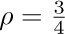
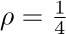
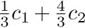
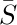
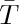
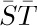

K ← K1. If K ≤ M, return to step A2; otherwise the algorithm terminates. 
Near the beginning of Section 2.3 we defined a List informally as “a finite sequence of zero or more atoms or Lists.”
Any forest is a List; for example,
may be regarded as the List
and the corresponding List diagram would be
The reader should review at this point the introduction to Lists given earlier, in particular (3), (4), (5), (6), (7) in the opening pages of Section 2.3. Recall that, in (2) above, the notation “a: (b, c, d)” means that (b, c, d) is a List of three atoms, which has been labeled with the attribute “a”. This convention is compatible with our general policy that each node of a tree may contain information besides its structural connections. However, as was discussed for trees in Section 2.3.3, it is quite possible and sometimes desirable to insist that all Lists be unlabeled, so that all the information appears in the atoms.
Although any forest may be regarded as a List, the converse is not true. The following List is perhaps more typical than (2) and (3) since it shows how the restrictions of tree structure might be violated:
which may be diagrammed as
[Compare with the example in 2.3–(7). The form of these diagrams need not be taken too seriously.]
As we might expect, there are many ways to represent List structures within a computer memory. These methods are usually variations on the same basic theme by which we have used binary trees to represent general forests of trees: One field, say RLINK, is used to point to the next element of a List, and another field DLINK may be used to point to the first element of a sub-List. By a natural extension of the memory representation described in Section 2.3.2, we would represent the List (5) as follows:
Unfortunately, this simple idea is not quite adequate for the most common List processing applications. For example, suppose that we have the List L = (A, a, (A, A)), which contains three references to another List A = (b, c, d). One of the typical List processing operations is to remove the leftmost element of A, so that A becomes (c, d); but this requires three changes to the representation of L, if we are to use the technique shown in (6), since each pointer to A points to the element b that is being deleted. A moment’s reflection will convince the reader that it is extremely undesirable to change the pointers in every reference to A just because the first element of A is being deleted. (In this example we could try to be tricky, assuming that there are no pointers to the element c, by copying the entire element c into the location formerly occupied by b and then deleting the old element c. But this trick fails to work when A loses its last element and becomes empty.)
For this reason the representation scheme (6) is generally replaced by another scheme that is similar, but uses a List head to begin each List, as was introduced in Section 2.2.4. Each List contains an additional node called its List head, so that the configuration (6) would, for example, be represented thus:
The introduction of such header nodes is not really a waste of memory space in practice, since many uses for the apparently unused fields — the shaded areas in diagram (7) — generally present themselves. For example, there is room for a reference count, or a pointer to the right end of the List, or an alphabetic name, or a “scratch” field that aids traversal algorithms, etc.
In our original diagram (6), the node containing b is an atom while the node containing f specifies an empty List. These two things are structurally identical, so the reader would be quite justified in asking why we bother to talk about “atoms” at all; with no loss of generality we could have defined Lists as merely “a finite sequence of zero or more Lists,” with our usual convention that each node of a List may contain data besides its structural information. This point of view is certainly defensible and it makes the concept of an “atom” seem very artificial. There is, however, a good reason for singling out atoms as we have done, when efficient use of computer memory is taken into consideration, since atoms are not subject to the same sort of general-purpose manipulation that is desired for Lists. The memory representation (6) shows there is probably more room for information in an atomic node, b, than in a List node, f; and when List head nodes are also present as in (7), there is a dramatic difference between the storage requirements for the nodes b and f . Thus the concept of atoms is introduced primarily to aid in the effective use of computer memory. Typical Lists contain many more atoms than our example would indicate; the example of (4)–(7) is intended to show the complexities that are possible, not the simplicities that are usual.
A List is in essence nothing more than a linear list whose elements may contain pointers to other Lists. The common operations we wish to perform on Lists are the usual ones desired for linear lists (creation, destruction, insertion, deletion, splitting, concatenation), plus further operations that are primarily of interest for tree structures (copying, traversal, input and output of nested information). For these purposes any of the three basic techniques for representing linked linear lists in memory — namely straight, circular, or double linkage — can be used, with varying degrees of efficiency depending on the algorithms being employed. For these three types of representation, diagram (7) might appear in memory as follows:
Here “LLINK” is used for a pointer to the left in a doubly linked representation. The INFO and DLINK fields are identical in all three forms.
There is no need to repeat here the algorithms for List manipulation in any of these three forms, since we have already discussed the ideas many times. The following important points about Lists, which distinguish them from the simpler special cases treated earlier, should however be noted:
1) It is implicit in the memory representation above that atomic nodes are distinguishable from nonatomic nodes; furthermore, when circular or doubly linked Lists are being used, it is desirable to distinguish header nodes from the other types, as an aid in traversing the Lists. Therefore each node generally contains a TYPE field that tells what kind of information the node represents. This TYPE field is often used also to distinguish between various types of atoms (for example, between alphabetic, integer, or floating point quantities, for use when manipulating or displaying the data).
2) The format of nodes for general List manipulation with the MIX computer might be designed in one of the following two ways.
a) Possible one-word format, assuming that all INFO appears in atoms:
b) Possible two-word format:
S, T: As in (9).
3) It is clear that Lists are very general structures; indeed, it seems fair to state that any structure whatsoever can be represented as a List when appropriate conventions are made. Because of this universality of Lists, a large number of programming systems have been designed to facilitate List manipulation, and there are usually several such systems available at any computer installation. Such systems are based on a general-purpose format for nodes such as (9) or (10) above, designed for flexibility in List operations. Actually, it is clear that this general-purpose format is usually not the best format suited to a particular application, and the processing time using the general-purpose routines is noticeably slower than a person would achieve by hand-tailoring the system to a particular problem. For example, it is easy to see that nearly all of the applications we have worked out so far in this chapter would be encumbered by a general-List representation as in (9) or (10) instead of the node format that was given in each case. A List manipulation routine must often examine the T-field when it processes nodes, and that was not needed in any of our programs so far. This loss of efficiency is repaid in many instances by the comparative ease of programming and the reduction of debugging time when a general-purpose system is used.
4) There is also an extremely significant difference between algorithms for List processing and the algorithms given previously in this chapter. Since a single List may be contained in many other Lists, it is by no means clear exactly when a List should be returned to the pool of available storage. Our algorithms so far have always said “AVAIL ⇐ X”, whenever NODE(X) was no longer needed. But since general Lists can grow and die in a completely unpredictable manner, it is often quite difficult to tell just when a particular node is superfluous. Therefore the problem of maintaining the list of available space is considerably more difficult with Lists than it was in the simple cases considered previously. We will devote the rest of this section to a discussion of the storage reclamation problem.
Let us imagine that we are designing a general-purpose List processing system that will be used by hundreds of other programmers. Two principal methods have been suggested for maintaining the available space list: the use of reference counters, and garbage collection. The reference-counter technique makes use of a new field in each node, which contains a count of how many arrows point to this node. Such a count is rather easy to maintain as a program runs, and whenever it drops to zero, the node in question becomes available. The garbage-collection technique, on the other hand, requires a new one-bit field in each node called the mark bit. The idea in this case is to write nearly all the algorithms so that they do not return any nodes to free storage, and to let the program run merrily along until all of the available storage is gone; then a “recycling” algorithm makes use of the mark bits to identify all nodes that are not currently accessible and to return them to available storage, after which the program can continue.
Neither of these two methods is completely satisfactory. The principal drawback of the reference-counter method is that it does not always free all the nodes that are available. It works fine for overlapped Lists (Lists that contain common sub-Lists); but recursive Lists, like our examples L and N in (4), will never be returned to storage by the reference-counter technique. Their counts will be nonzero (since they refer to themselves) even when no other List accessible to the running program points to them. Furthermore, the referencecounter method uses a good chunk of space in each node (although this space is sometimes available anyway due to the computer word size).
The difficulty with the garbage-collection technique, besides the annoying loss of a bit in each node, is that it runs very slowly when nearly all the memory space is in use; and in such cases the number of free storage cells found by the reclamation process is not worth the effort. Programs that exceed the capacity of storage (and many undebugged programs do!) often waste a good deal of time calling the garbage collector several almost fruitless times just before storage is finally exhausted. A partial solution to this problem is to let the programmer specify a number k, signifying that processing should not continue after a garbage collection run has found k or fewer free nodes.
Another problem is the occasional difficulty of determining exactly what Lists are not garbage at a given stage. If the programmer has been using any nonstandard techniques or keeping any pointer values in unusual places, chances are good that the garbage collector will go awry. Some of the greatest mysteries in the history of debugging have been caused by the fact that garbage collection suddenly took place at an unexpected time during the running of programs that had worked many times before. Garbage collection also requires that programmers keep valid information in all pointer fields at all times, although we often find it convenient to leave meaningless information in fields that the program doesn’t use — for example, the link in the rear node of a queue; see exercise 2.2.3–6.
Although garbage collection requires one mark bit for each node, we could keep a separate table of all the mark bits packed together in another memory area, with a suitable correspondence between the location of a node and its mark bit. On some computers this idea can lead to a method of handling garbage collection that is more attractive than giving up a bit in each node.
J. Weizenbaum has suggested an interesting modification of the reference-counter technique. Using doubly linked List structures, he puts a reference counter only in the header of each List. Thus, when pointer variables traverse a List, they are not included in the reference counts for the individual nodes. If we know the rules by which reference counts are maintained for entire Lists, we know (in theory) how to avoid referring to any List that has a reference count of zero. We also have complete freedom to explicitly override reference counts and to return particular Lists to available storage. These ideas require careful handling; they prove to be somewhat dangerous in the hands of inexperienced programmers, and they’ve tended to make program debugging more difficult due to the consequences of referring to nodes that have been erased. The nicest part of Weizenbaum’s approach is his treatment of Lists whose reference count has just gone to zero: Such a List is appended at the end of the current available list — this is easy to do with doubly linked Lists — and it is considered for available space only after all previously available cells are used up. Eventually, as the individual nodes of this List do become available, the reference counters of Lists they refer to are decreased by one. This delayed action of erasing Lists is quite efficient with respect to running time; but it tends to make incorrect programs run correctly for awhile! For further details see CACM 6 (1963), 524–544.
Algorithms for garbage collection are quite interesting for several reasons. In the first place, such algorithms are useful in other situations when we want to mark all nodes that are directly or indirectly referred to by a given node. (For example, we might want to find all subroutines called directly or indirectly by a certain subroutine, as in exercise 2.2.3–26.)
Garbage collection generally proceeds in two phases. We assume that the mark bits of all nodes are initially zero (or we set them all to zero). Now the first phase marks all the nongarbage nodes, starting from those that are immediately accessible to the main program. The second phase makes a sequential pass over the entire memory pool area, putting all unmarked nodes onto the list of free space. The marking phase is the most interesting, so we will concentrate our attention on it. Certain variations on the second phase can, however, make it nontrivial; see exercise 9.
When a garbage collection algorithm is running, only a very limited amount of storage is available to control the marking procedure. This intriguing problem will become clear in the following discussion; it is a difficulty that is not appreciated by most people when they first hear about the idea of garbage collection, and for several years there was no good solution to it.
The following marking algorithm is perhaps the most obvious.
Algorithm A (Marking). Let the entire memory used for List storage be NODE(1), NODE(2), ..., NODE(M), and suppose that these words either are atoms or contain two link fields ALINK and BLINK. Assume that all nodes are initially unmarked. The purpose of this algorithm is to mark all of the nodes that can be reached by a chain of ALINK and/or BLINK pointers in nonatomic nodes, starting from a set of “immediately accessible” nodes, that is, nodes pointed to by certain fixed locations in the main program; these fixed pointers are used as a source for all memory accesses.
A1. [Initialize.] Mark all nodes that are immediately accessible. Set K ← 1.
A2. [Does NODE(K) imply another?] Set K1 ← K + 1. If NODE(K) is an atom or unmarked, go to step A3. Otherwise, if NODE(ALINK(K)) is unmarked: Mark it and, if it is not an atom, set K1 ← min(K1, ALINK(K)). Similarly, if NODE(BLINK(K)) is unmarked: Mark it and, if it is not an atom, set K1 ← min(K1, BLINK(K)).
A3. [Done?] Set K ← K1. If K ≤ M, return to step A2; otherwise the algorithm terminates.
Throughout this algorithm and the ones that follow in this section, we will assume for convenience that the nonexistent node “NODE(Λ)” is marked. (For example, ALINK(K) or BLINK(K) may equal Λ in step A2.)
A variant of Algorithm A sets K1 ← M + 1 in step A1, removes the operation “K1 ← K + 1” from step A2, and instead changes step A3 to
A3′. [Done?] Set K ← K + 1. If K ≤ M, return to step A2. Otherwise if K1 ≤ M, set K ← K1 and K1 ← M + 1 and return to step A2. Otherwise the algorithm terminates.
It is very difficult to give a precise analysis of Algorithm A, or to determine whether it is better or worse than the variant just described, since no meaningful way to describe the probability distribution of the input presents itself. We can say that it takes up time proportional to nM in the worst case, where n is the number of cells it marks; and, in general, we can be sure that it is very slow when n is large. Algorithm A is too slow to make garbage collection a usable technique.
Another fairly evident marking algorithm is to follow all paths and to record branch points on a stack as we go:
Algorithm B (Marking). This algorithm achieves the same effect as Algorithm A, using STACK[1], STACK[2], ... as auxiliary storage to keep track of all paths that have not yet been pursued to completion.
B1. [Initialize.] Let T be the number of immediately accessible nodes; mark them and place pointers to them in STACK[1], ..., STACK[T].
B2. [Stack empty?] If T = 0, the algorithm terminates.
B3. [Remove top entry.] Set K ← STACK[T], T ← T − 1.
B4. [Examine links.] If NODE(K) is an atom, return to step B2. Otherwise, if NODE(ALINK(K)) is unmarked, mark it and set T ← T + 1, STACK[T] ← ALINK(K); if NODE(BLINK(K)) is unmarked, mark it and set T ← T + 1, STACK[T] ← BLINK(K). Return to B2.
Algorithm B clearly has an execution time essentially proportional to the number of cells it marks, and this is as good as we could possibly expect; but it is not really usable for garbage collection because there is no place to keep the stack! It does not seem unreasonable to assume that the stack in Algorithm B might grow up to, say, five percent of the size of memory; but when garbage collection is called, and all available space has been used up, there is only a fixed (rather small) number of cells to use for such a stack. Most of the early garbage collection procedures were essentially based on this algorithm. If the special stack space was used up, the entire program had to be terminated.
A somewhat better alternative is possible, using a fixed stack size, by combining Algorithms A and B:
Algorithm C (Marking). This algorithm achieves the same effect as Algorithms A and B, using an auxiliary table of H cells, STACK[0], STACK[1], ..., STACK[H − 1].
In this algorithm, the action “insert X on the stack” means the following: “Set T ← (T + 1) mod H, and STACK[T] ← X. If T = B, set B ← (B + 1) mod H and K1 ← min(K1, STACK[B]).” (Note that T points to the current top of the stack, and B points one place below the current bottom; STACK essentially operates as an input-restricted deque.)
C1. [Initialize.] Set T ← H − 1, B ← H − 1, K1 ← M + 1. Mark all the immediately accessible nodes, and successively insert their locations onto the stack (as just described above).
C2. [Stack empty?] If T = B, go to C5.
C3. [Remove top entry.] Set K ← STACK[T], T ← (T − 1) mod H.
C4. [Examine links.] If NODE(K) is an atom, return to step C2. Otherwise, if NODE(ALINK(K)) is unmarked, mark it and insert ALINK(K) on the stack. Similarly, if NODE(BLINK(K)) is unmarked, mark it and insert BLINK(K) on the stack. Return to C2.
C5. [Sweep.] If K1 > M, the algorithm terminates. (The variable K1 represents the smallest location where there is a possibility of a new lead to a node that should be marked.) Otherwise, if NODE(K1) is an atom or unmarked, increase K1 by 1 and repeat this step. If NODE(K1) is marked, set K ← K1, increase K1 by 1, and go to C4.
This algorithm and Algorithm B can be improved if X is never put on the stack when NODE(X) is an atom; moreover, steps B4 and C4 need not put items on the stack when they know that the items will immediately be removed. Such modifications are straightforward and they have been left out to avoid making the algorithms unnecessarily complicated.
Algorithm C is essentially equivalent to Algorithm A when H = 1, and to Algorithm B when H = M; it gradually becomes more efficient as H becomes larger. Unfortunately, Algorithm C defies a precise analysis for the same reason as Algorithm A, and we have no good idea how large H should be to make this method fast enough. It is plausible but uncomfortable to say that a value like H = 50 is sufficient to make Algorithm C usable for garbage collection in most applications.
Algorithms B and C use a stack kept in sequential memory locations; but we have seen earlier in this chapter that linked memory techniques are well suited to maintaining stacks that are not consecutive in memory. This suggests the idea that we might keep the stack of Algorithm B somehow scattered through the same memory area in which we are collecting garbage. This could be done easily if we were to give the garbage collection routine a little more room in which to breathe. Suppose, for example, we assume that all Lists are represented as in (9), except that the REF fields of List head nodes are used for garbage collection purposes instead of as reference counts. We can then redesign Algorithm B so that the stack is maintained in the REF fields of the header nodes:
Algorithm D (Marking). This algorithm achieves the same effect as Algorithms A, B, and C, but it assumes that the nodes have S, T, REF, and RLINK fields as described above, instead of ALINKs and BLINKs. The S field is used as the mark bit, so that S(P) = 1 means that NODE(P) is marked.
D1. [Initialize.] Set TOP ← Λ. Then for each pointer P to the head of an immediately accessible List (see step A1 of Algorithm A), if S(P) = 0, set S(P) ← 1, REF(P) ← TOP, TOP ← P.
D2. [Stack empty?] If TOP = Λ, the algorithm terminates.
D3. [Remove top entry.] Set P ← TOP, TOP ← REF(P).
D4. [Move through List.] Set P ← RLINK(P); then if P = Λ, or if T(P) = 0, go to D2. Otherwise set S(P) ← 1. If T(P) > 1, set S(REF(P)) ← 1 (thereby marking the atomic information). Otherwise (T(P) = 1), set Q ← REF(P); if Q ≠ Λ and S(Q) = 0, set S(Q) ← 1, REF(Q) ← TOP, TOP ← Q. Repeat step D4.
Algorithm D may be compared to Algorithm B, which is quite similar, and its running time is essentially proportional to the number of nodes marked. However, Algorithm D is not recommended without qualification, because its seemingly rather mild restrictions are often too stringent for a general Listprocessing system. This algorithm essentially requires that all List structures be well-formed, as in (7), whenever garbage collection is called into action. But algorithms for List manipulations momentarily leave the List structures malformed, and a garbage collector such as Algorithm D must not be used during those momentary periods. Moreover, care must be taken in step D1 when the program contains pointers to the middle of a List.
These considerations bring us to Algorithm E, which is an elegant marking method discovered independently by Peter Deutsch and by Herbert Schorr and W. M. Waite in 1965. The assumptions used in this algorithm are just a little different from those of Algorithms A through D.
Algorithm E (Marking). Assume that a collection of nodes is given having the following fields:
MARK (a one-bit field),
ATOM (another one-bit field),
ALINK (a pointer field),
BLINK (a pointer field).
When ATOM = 0, the ALINK and BLINK fields may contain Λ or a pointer to another node of the same format; when ATOM= 1, the contents of the ALINK and BLINK fields are irrelevant to this algorithm.
Given a nonnull pointer PO, this algorithm sets the MARK field equal to 1 in NODE(PO) and in every other node that can be reached from NODE(PO) by a chain of ALINK and BLINK pointers in nodes with ATOM = MARK = 0. The algorithm uses three pointer variables, T, Q, and P. It modifies the links and control bits in such a way that all ATOM, ALINK, and BLINK fields are restored to their original settings after completion, although they may be changed temporarily.
E1. [Initialize.] Set T ← Λ, P ← PO. (Throughout the remainder of this algorithm, the variable T has a dual significance: When T ≠ Λ, it points to the top of what is essentially a stack as in Algorithm D; and the node that T points to once contained a link equal to P in place of the “artificial” stack link that currently occupies NODE(T).)
E2. [Mark.] Set MARK(P) ← 1.
E3. [Atom?] If ATOM(P) = 1, go to E6.
E4. [Down ALINK.] Set Q ← ALINK(P). If Q ≠ Λ and MARK(Q) = 0, set ATOM(P) ← 1, ALINK(P) ← T, T ← P, P ← Q, and go to E2. (Here the ATOM field and ALINK fields are temporarily being altered, so that the List structure in certain marked nodes has been rather drastically changed. But these changes will be restored in step E6.)
E5. [Down BLINK.] Set Q ← BLINK(P). If Q ≠ Λ and MARK(Q) = 0, set BLINK(P) ← T, T ← P, P ← Q, and go to E2.
Fig. 39. A structure marked by Algorithm E. (The table shows only changes that have occurred since the previous step.)
E6. [Up.] (This step undoes the link switching made in step E4 or E5; the setting of ATOM(T) tells whether ALINK(T) or BLINK(T) is to be restored.) If T = Λ, the algorithm terminates. Otherwise set Q ← T. If ATOM(Q) = 1, set ATOM(Q) ← 0, T ← ALINK(Q), ALINK(Q) ← P, P ← Q, and return to E5. If ATOM(Q) = 0, set T ← BLINK(Q), BLINK(Q) ← P, P ← Q, and repeat E6.
An example of this algorithm in action appears in Fig. 39, which shows the successive steps encountered for a simple List structure. The reader will find it worthwhile to study Algorithm E very carefully; notice how the linking structure is artificially changed in steps E4 and E5, in order to maintain a stack analogous to the stack in Algorithm D. When we return to a previous state, the ATOM field is used to tell whether ALINK or BLINK contains the artificial address. The “nesting” shown at the bottom of Fig. 39 illustrates how each nonatomic node is visited three times during Algorithm E: The same configuration (T,P) occurs at the beginning of steps E2, E5, and E6.
A proof that Algorithm E is valid can be formulated by induction on the number of nodes that are to be marked. We prove at the same time that P returns to its initial value P0 at the conclusion of the algorithm; for details, see exercise 3. Algorithm E will run faster if step E3 is deleted and if special tests for “ATOM(Q) = 1” and appropriate actions are made in steps E4 and E5, as well as a test “ATOM(P0) = 1” in step E1. We have stated the algorithm in its present form for simplicity; the modifications just stated appear in the answer to exercise 4.
The idea used in Algorithm E can be applied to problems other than garbage collection; in fact, its use for tree traversal has already been mentioned in exercise 2.3.1–21. The reader may also find it useful to compare Algorithm E with the simpler problem solved in exercise 2.2.3–7.
Of all the marking algorithms we have discussed, only Algorithm D is directly applicable to Lists represented as in (9). The other algorithms all test whether or not a given node P is an atom, and the conventions of (9) are incompatible with such tests because they allow atomic information to fill an entire word except for the mark bit. However, each of the other algorithms can be modified so that they will work when atomic data is distinguished from pointer data in the word that links to it instead of by looking at the word itself. In Algorithms A or C we can simply avoid marking atomic words until all nonatomic words have been properly marked; then one further pass over all the data suffices to mark all the atomic words. Algorithm B is even easier to modify, since we need merely keep atomic words off the stack. The adaptation of Algorithm E is almost as simple, although if both ALINK and BLINK are allowed to point to atomic data it will be necessary to introduce another 1-bit field in nonatomic nodes. This is generally not hard to do. (For example, when there are two words per node, the least significant bit of each link field may be used to store temporary information.)
Although Algorithm E requires a time proportional to the number of nodes it marks, this constant of proportionality is not as small as in Algorithm B; the fastest garbage collection method known combines Algorithms B and E, as discussed in exercise 5.
Let us now try to make some quantitative estimates of the efficiency of garbage collection, as opposed to the philosophy of “AVAIL ⇐ X” that was used in most of the previous examples in this chapter. In each of the previous cases we could have omitted all specific mention of returning nodes to free space and we could have substituted a garbage collector instead. (In a special-purpose application, as opposed to a set of general-purpose List manipulation subroutines, the programming and debugging of a garbage collector is more difficult than the methods we have used, and, of course, garbage collection requires an extra bit reserved in each node; but we are interested here in the relative speed of the programs once they have been written and debugged.)
The best garbage collection routines known have an execution time essentially of the form c1N + c2M, where c1 and c2 are constants, N is the number of nodes marked, and M is the total number of nodes in the memory. Thus M − N is the number of free nodes found, and the amount of time required to return these nodes to free storage is (c1N + c2M)/(M − N) per node. Let N = ρM; this figure becomes (c1ρ+c2) /(1−ρ). So if , that is, if the memory is three-fourths full, we spend 3c1 + 4c2 units of time per free node returned to storage; when , the corresponding cost is only  . If we do not use the garbage collection technique, the amount of time per node returned is essentially a constant, c3, and it is doubtful that c3/c1 will be very large. Hence we can see to what extent garbage collection is inefficient when the memory becomes full, and how it is correspondingly efficient when the demand on memory is light.
Many programs have the property that the ratio ρ = N/M of good nodes to total memory is quite small. When the pool of memory becomes full in such cases, it might be best to move all the active List data to another memory pool of equal size, using a copying technique (see exercise 10) but without bothering to preserve the contents of the nodes being copied. Then when the second memory pool fills up, we can move the data back to the first one again. With this method more data can be kept in high-speed memory at once, because link fields tend to point to nearby nodes. Moreover, there’s no need for a marking phase, and storage allocation is simply sequential.
It is possible to combine garbage collection with some of the other methods of returning cells to free storage; these ideas are not mutually exclusive, and some systems employ both the reference counter and the garbage collection schemes, besides allowing the programmer to erase nodes explicitly. The idea is to employ garbage collection only as a “last resort” whenever all other methods of returning cells have failed. An elaborate system, which implements this idea and also includes a mechanism for postponing operations on reference counts in order to achieve further efficiency, has been described by L. P. Deutsch and D. G. Bobrow in CACM 19 (1976), 522–526.
A sequential representation of Lists, which saves many of the link fields at the expense of more complicated storage management, is also possible. See N. E. Wiseman and J. O. Hiles, Comp. J. 10 (1968), 338–343; W. J. Hansen, CACM 12 (1969), 499–507; and C. J. Cheney, CACM 13 (1970), 677–678.
Daniel P. Friedman and David S. Wise have observed that the reference counter method can be employed satisfactorily in many cases even when Lists point to themselves, if certain link fields are not included in the counts [Inf. Proc. Letters 8 (1979), 41–45].
A great many variants and refinements of garbage collection algorithms have been proposed. Jacques Cohen, in Computing Surveys 13 (1981), 341–367, presents a detailed review of the literature prior to 1981, with important comments about the extra cost of memory accesses when pages of data are shuttled between slow memory and fast memory.
Garbage collection as we have described it is unsuitable for “real time” applications, where each basic List operation must be quick; even if the garbage collector goes into action infrequently, it requires large chunks of computer time on those occasions. Exercise 12 discusses some approaches by which real-time garbage collection is possible.
It is a very sad thing nowadays
that there is so little useless information.
— OSCAR WILDE (1894)
Exercises
 1. [M21] In Section 2.3.4 we saw that trees are special cases of the “classical” mathematical concept of a directed graph. Can Lists be described in graph-theoretic terminology?
1. [M21] In Section 2.3.4 we saw that trees are special cases of the “classical” mathematical concept of a directed graph. Can Lists be described in graph-theoretic terminology?
2. [20] In Section 2.3.1 we saw that tree traversal can be facilitated using a threaded representation inside the computer. Can List structures be threaded in an analogous way?
3. [M26] Prove the validity of Algorithm E. [Hint: See the proof of Algorithm 2.3.1T.]
4. [28] Write a MIX program for Algorithm E, assuming that nodes are represented as one MIX word, with MARK the (0 : 0) field [“+” = 0, “−” = 1], ATOM the (1 : 1) field, ALINK the (2 : 3) field, BLINK the (4 : 5) field, and Λ = 0. Also determine the execution time of your program in terms of relevant parameters. (In the MIX computer the problem of determining whether a memory location contains −0 or +0 is not quite trivial, and this can be a factor in your program.)
5. [25] (Schorr and Waite.) Give a marking algorithm that combines Algorithms B and E as follows: The assumptions of Algorithm E with regard to fields within the nodes, etc., are retained; but an auxiliary stack STACK[1], STACK[2], ..., STACK[N] is used as in Algorithm B, and the mechanism of Algorithm E is employed only when the stack is full.
6. [00] The quantitative discussion at the end of this section says that the cost of garbage collection is approximately c1N + c2M units of time; where does the “c2M” term come from?
7. [24] (R. W. Floyd.) Design a marking algorithm that is similar to Algorithm E in using no auxiliary stack, except that (i) it has a more difficult task to do, because each node contains only MARK, ALINK, and BLINK fields — there is no ATOM field to provide additional control; yet (ii) it has a simpler task to do, because it marks only a binary tree instead of a general List. Here ALINK and BLINK are the usual LLINK and RLINK in a binary tree.
 8. [27] (L. P. Deutsch.) Design a marking algorithm similar to Algorithms D and E in that it uses no auxiliary memory for a stack, but modify the method so that it works with nodes of variable size and with a variable number of pointers having the following format: The first word of a node has two fields
8. [27] (L. P. Deutsch.) Design a marking algorithm similar to Algorithms D and E in that it uses no auxiliary memory for a stack, but modify the method so that it works with nodes of variable size and with a variable number of pointers having the following format: The first word of a node has two fields MARK and SIZE; the MARK field is to be treated as in Algorithm E, and the SIZE field contains a number n ≥ 0. This means that there are n consecutive words after the first word, each containing two fields MARK (which is zero and should remain so) and LINK (which is Λ or points to the first word of another node). For example, a node with three pointers would comprise four consecutive words:
Your algorithm should mark all nodes reachable from a given node P0.
 9. [28] (D. Edwards.) Design an algorithm for the second phase of garbage collection that “compacts storage” in the following sense: Let
9. [28] (D. Edwards.) Design an algorithm for the second phase of garbage collection that “compacts storage” in the following sense: Let NODE(1), ..., NODE(M) be one-word nodes with fields MARK, ATOM, ALINK, and BLINK, as described in Algorithm E. Assume that MARK = 1 in all nodes that are not garbage. The desired algorithm should relocate the marked nodes, if necessary, so that they all appear in consecutive locations NODE(1), ..., NODE(K), and at the same time the ALINK and BLINK fields of nonatomic nodes should be altered if necessary so that the List structure is preserved.
 10. [28] Design an algorithm that copies a List structure, assuming that an internal representation like that in (7) is being used. (Thus, if your procedure is asked to copy the List whose head is the node at the upper left corner of (7), a new set of Lists having 14 nodes, and with structure and information identical to that shown in (7), should be created.)
10. [28] Design an algorithm that copies a List structure, assuming that an internal representation like that in (7) is being used. (Thus, if your procedure is asked to copy the List whose head is the node at the upper left corner of (7), a new set of Lists having 14 nodes, and with structure and information identical to that shown in (7), should be created.)
Assume that the List structure is stored in memory using S, T, REF, and RLINK fields as in (9), and that NODE(P0) is the head of the List to be copied. Assume further that the REF field in each List head node is Λ; to avoid the need for additional memory space, your copying procedure should make use of the REF fields (and reset them to Λ again afterwards).
11. [M30] Any List structure can be “fully expanded” into a tree structure by repeating all overlapping elements until none are left; when the List is recursive, this gives an infinite tree. For example, the List (5) would expand into an infinite tree whose first four levels are
Design an algorithm to test the equivalence of two List structures, in the sense that they have the same diagram when fully expanded. For example, Lists A and B are equivalent in this sense, if
A = (a: C, b, a: (b: D))
B = (a: (b: D), b, a: E)
C = (b: (a: C))
D = (a: (b: D))
E = (b: (a: C)).
12. [30] (M. Minsky.) Show that it is possible to use a garbage collection method reliably in a “real time” application, for example when a computer is controlling some physical device, even when stringent upper bounds are placed on the maximum execution time required for each List operation performed. [Hint: Garbage collection can be arranged to work in parallel with the List operations, if appropriate care is taken.]
Now that we have examined linear lists and tree structures in detail, the principles of representing structural information within a computer should be evident. In this section we will look at another application of these techniques, this time for the typical case in which the structural information is slightly more complicated: In higher-level applications, several types of structure are usually present simultaneously.
A “multilinked structure” involves nodes with several link fields in each node, not just one or two as in most of our previous examples. We have already seen some examples of multiple linkage, such as the simulated elevator system in Section 2.2.5 and the multivariate polynomials in Section 2.3.3.
We shall see that the presence of many different kinds of links per node does not necessarily make the accompanying algorithms any more difficult to write or to understand than the algorithms already studied. We will also discuss the important question, “How much structural information ought to be explicitly recorded in memory?”
The problem we will consider arises in connection with writing a compiler program for the translation of COBOL and related languages. A programmer who uses COBOL may give alphabetic names to program variables on several levels; for example, the program might refer to files of data for sales and purchases, having the following structure:
This configuration indicates that each item in SALES consists of two parts, the DATE and the TRANSACTION; the DATE is further divided into three parts, and the TRANSACTION likewise has five subdivisions. Similar remarks apply to PURCHASES. The relative order of these names indicates the order in which the quantities appear in external representations of the file (for example, magnetic tape or printed forms); notice that in this example “DAY” and “MONTH” appear in opposite order in the two files. The programmer also gives further information, not shown in this illustration, that tells how much space each item of information occupies and in what format it appears; such considerations are not relevant to us in this section, so they will not be mentioned further.
A COBOL programmer first describes the file layout and the other program variables, then specifies the algorithms that manipulate those quantities. To refer to an individual variable in the example above, it would not be sufficient merely to give the name DAY, since there is no way of telling if the variable called DAY is in the SALES file or in the PURCHASES file. Therefore a COBOL programmer is given the ability to write “DAY OF SALES” to refer to the DAY part of a SALES item. The programmer could also write, more completely,
“DAY OF DATE OF SALES”,
but in general there is no need to give more qualification than necessary to avoid ambiguity. Thus,
“NAME OF SHIPPER OF TRANSACTION OF PURCHASES”
may be abbreviated to
“NAME OF SHIPPER”
since only one part of the data has been called SHIPPER.
These rules of COBOL may be stated more precisely as follows:
a) Each name is immediately preceded by an associated positive integer called its level number. A name either refers to an elementary item or it is the name of a group of one or more items whose names follow. In the latter case, each item of the group must have the same level number, which must be greater than the level number of the group name. (For example, DATE and TRANSACTION above have level number 2, which is greater than the level number 1 of SALES.)
b) To refer to an elementary item or group of items named A0, the general form is
A0OF A1OF ... OF An,
where n ≥ 0 and where, for 0 ≤ j < n, Aj is the name of some item contained directly or indirectly within a group named Aj+1 . There must be exactly one item A0 satisfying this condition.
c) If the same name A0 appears in several places, there must be a way to refer to each use of the name by using qualification.
As an example of rule (c), the data configuration
would not be allowed, since there is no unambiguous way to refer to the second appearance of CC. (See exercise 4.)
COBOL has another feature that affects compiler writing and the application we are considering, namely an option in the language that makes it possible to refer to many items at once. A COBOL programmer may write
MOVE CORRESPONDING α TO β
which moves all items with corresponding names from data area α to data area β. For example, the COBOL statement
MOVE CORRESPONDING DATE OF SALES TO DATE OF PURCHASES
would mean that the values of MONTH, DAY, and YEAR from the SALES file are to be moved to the variables MONTH, DAY, and YEAR in the PURCHASES file. (The relative order of DAY and MONTH is thereby interchanged.)
The problem we will investigate in this section is to design three algorithms suitable for use in a COBOL compiler, which are to do the following things:
Operation 1. To process a description of names and level numbers such as (1), putting the relevant information into tables within the compiler for use in operations 2 and 3.
Operation 2. To determine if a given qualified reference, as in rule (b), is valid, and when it is valid to locate the corresponding data item.
Operation 3. To find all corresponding pairs of items indicated by a given CORRESPONDING statement.
We will assume that our compiler already has a “symbol table subroutine” that will convert an alphabetic name into a link that points to a table entry for that name. (Methods for constructing symbol table algorithms are discussed in detail in Chapter 6.) In addition to the Symbol Table, there is a larger table that contains one entry for each item of data in the COBOL source program that is being compiled; we will call this the Data Table.
Clearly, we cannot design an algorithm for operation 1 until we know what kind of information is to be stored in the Data Table, and the form of the Data Table depends on what information we need in order to perform operations 2 and 3; thus we look first at operations 2 and 3.
In order to determine the meaning of the COBOL reference
we should first look up the name A0 in the Symbol Table. There ought to be a series of links from the Symbol Table entry to all Data Table entries for this name. Then for each Data Table entry we will want a link to the entry for the group item that contains it. Now if there is a further link field from the Data Table items back to the Symbol Table, it is not hard to see how a reference like (3) can be processed. Furthermore, we will want some sort of links from the Data Table entries for group items to the items in the group, in order to locate the pairs indicated by “MOVE CORRESPONDING”.
We have thereby found a potential need for five link fields in each Data Table entry:
PREV (a link to the previous entry with the same name, if any);
PARENT (a link to the smallest group, if any, containing this item);
NAME (a link to the Symbol Table entry for this item);
CHILD (a link to the first subitem of a group);
SIB (a link to the next subitem in the group containing this item).
It is clear that COBOL data structures like those for SALES and PURCHASES above are essentially trees; and the PARENT, CHILD, and SIB links that appear here are familiar from our previous study. (The conventional binary tree representation of a tree consists of the CHILD and SIB links; adding the PARENT link gives what we have called a “triply linked tree.” The five links above consist of these three tree links together with PREV and NAME, which superimpose further information on the tree structure.)
Perhaps not all five of these links will turn out to be necessary, or sufficient, but we will try first to design our algorithms under the tentative assumption that Data Table entries will involve these five link fields (plus further information irrelevant to our problems). As an example of the multiple linking used, consider the two COBOL data structures
They would be represented as shown in (5) (with links indicated symbolically). The LINK field of each Symbol Table entry points to the most recently encountered Data Table entry for the symbolic name in question.
The first algorithm we require is one that builds the Data Table in such a form. Note the flexibility in choice of level numbers that is allowed by the COBOL rules; the left structure in (4) is completely equivalent to
because level numbers do not have to be sequential.
Some sequences of level numbers are illegal, however; for example, if the level number of D in (4) were changed to “6” (in either place) we would have a meaningless data configuration, violating the rule that all items of a group must have the same number. The following algorithm therefore makes sure that COBOL’s rule (a) has not been broken.
Algorithm A (Build Data Table). This algorithm is given a sequence of pairs (L, P), where L is a positive integer “level number” and P points to a Symbol Table entry, corresponding to COBOL data structures such as (4) above. The algorithm builds a Data Table as in the example (5) above. When P points to a Symbol Table entry that has not appeared before, LINK(P) will equal Λ. This algorithm uses an auxiliary stack that is treated as usual (using either sequential memory allocation, as in Section 2.2.2, or linked allocation, as in Section 2.2.3).
A1. [Initialize.] Set the stack contents to the single entry (0, Λ). (The stack entries throughout this algorithm are pairs (L, P), where L is an integer and P is a pointer; as this algorithm proceeds, the stack contains the level numbers and pointers to the most recent data entries on all levels higher in the tree than the current level. For example, just before encountering the pair “3 F” in the example above, the stack would contain
(0, Λ) (1, A1) (3, E3)
from bottom to top.)
A2. [Next item.] Let (L, P) be the next data item from the input. If the input is exhausted, however, the algorithm terminates. Set Q ⇐ AVAIL (that is, let Q be the location of a new node in which we can put the next Data Table entry).
A3. [Set name links.] Set
PREV(Q) ← LINK(P), LINK(P) ← Q, NAME(Q) ← P.
(This properly sets two of the five links in NODE(Q). We now want to set PARENT, CHILD, and SIB appropriately.)
A4. [Compare levels.] Let the top entry of the stack be (L1, P1). If L1 < L, set CHILD(P1) ← Q (or, if P1 = Λ, set FIRST ← Q, where FIRST is a variable that will point to the first Data Table entry) and go to A6.
A5. [Remove top level.] If L1 > L, remove the top stack entry, let (L1, P1) be the new entry that has just come to the top of the stack, and repeat step A5. If L1 < L, signal an error (mixed numbers have occurred on the same level). Otherwise, namely when L1 = L, set SIB(P1) ← Q, remove the top stack entry, and let (L1, P1) be the pair that has just come to the top of the stack.
A6. [Set family links.] Set PARENT(Q) ← P1, CHILD(Q) ← Λ, SIB(Q) ← Λ.
A7. [Add to stack.] Place (L, Q) on top of the stack, and return to step A2.
The introduction of an auxiliary stack, as explained in step A1, makes this algorithm so transparent that it needs no further explanation.
The next problem is to locate the Data Table entry corresponding to a reference
A good compiler will also check to ensure that such a reference is unambiguous. In this case, a suitable algorithm suggests itself immediately: All we need to do is to run through the list of Data Table entries for the name A0 and make sure that exactly one of these entries matches the stated qualification A1, ..., An.
Algorithm B (Check a qualified reference). Corresponding to reference (6), a Symbol Table subroutine will find pointers P0, P1, ..., Pn to the Symbol Table entries for A0, A1, ..., An, respectively.
The purpose of this algorithm is to examine P0, P1, ..., Pn and either to determine that reference (6) is in error, or to set variable Q to the address of the Data Table entry for the item referred to by (6).
B1. [Initialize.] Set Q ← Λ, P ← LINK(P0).
B2. [Done?] If P = Λ, the algorithm terminates; at this point Q will equal Λ if (6) does not correspond to any Data Table entry. But if P ≠ Λ, set S ← P and k ← 0. (S is a pointer variable that will run from P up the tree through PARENT links; k is an integer variable that goes from 0 to n. In practice, the pointers P0, ..., Pn would often be kept in a linked list, and instead of k, we would substitute a pointer variable that traverses this list; see exercise 5.)
B3. [Match complete?] If k < n go on to B4. Otherwise we have found a matching Data Table entry; if Q ≠ Λ, this is the second entry found, so an error condition is signaled. Set Q ← P, P ← PREV(P), and go to B2.
B4. [Increase k.] Set k ← k + 1.
B5. [Move up tree.] Set S ← PARENT(S). If S = Λ, we have failed to find a match; set P ← PREV(P) and go to B2.
B6. [Ak match?] If NAME(S) = Pk, go to B3, otherwise go to B5.
Note that the CHILD and SIB links are not needed by this algorithm.
The third and final algorithm that we need concerns “MOVE CORRESPONDING”; before we design such an algorithm, we must have a precise definition of what is required. The COBOL statement
where α and β are references such as (6) to data items, is an abbreviation for the set of all statements
MOVE α′ TO β′
where there exists an integer n ≥ 0 and n names A0, A1, ..., An−1 such that
and either α′ or β′ is an elementary item (not a group item). Furthermore we require that the first levels of (8) show complete qualifications, namely that Aj+1 be the parent of Aj for 0 ≤ j < n − 1 and that α and β are parents of An−1; α′ and β′ must be exactly n levels farther down in the tree than α and β are.
With respect to our example (4),
MOVE CORRESPONDING A TO H
is therefore an abbreviation for the statements
MOVE B OF A TO B OF H
MOVE G OF F OF A TO G OF F OF H
The algorithm to recognize all corresponding pairs α′, β′ is quite interesting although not difficult; we move through the tree whose root is α, in preorder, simultaneously looking in the β tree for matching names, and skipping over subtrees in which no corresponding elements can possibly occur. The names A0, ..., An−1 of (8) are discovered in the opposite order An−1, ..., A0.
Algorithm C (Find CORRESPONDING pairs). Given P0 and Q0, which point to Data Table entries for α and β, respectively, this algorithm successively finds all pairs (P, Q) of pointers to items (α′, β′) satisfying the constraints mentioned above.
C1. [Initialize.] Set P ← P0, Q ← Q0. (In the remainder of this algorithm, the pointer variables P and Q will walk through trees having the respective roots α and β.)
C2. [Elementary?] If CHILD(P) = Λ or CHILD(Q) = Λ, output (P, Q) as one of the desired pairs and go to C5. Otherwise set P ← CHILD(P), Q ← CHILD(Q). (In this step, P and Q point to items α′ and β′ satisfying (8), and we wish to MOVE α′ TO β′ if and only if either α′ or β′ (or both) is an elementary item.)
C3. [Match name.] (Now P and Q point to data items that have respective complete qualifications of the forms
A0OF A1OF ... OF An−1OF α
and
B0OF A1OF ... OF An−1OF β.
The object is to see if we can make B0 = A0 by examining all the names of the group A1OF ... OF An−1OF β.) If NAME(P) = NAME(Q), go to C2 (a match has been found). Otherwise, if SIB(Q) ≠ Λ, set Q ← SIB(Q) and repeat step C3. (If SIB(Q) = Λ, no matching name is present in the group, and we continue on to step C4.)
C4. [Move on.] If SIB(P) ≠ Λ, set P ← SIB(P) and Q ← CHILD(PARENT(Q)), and go back to C3. If SIB(P) = Λ, set P ← PARENT(P) and Q ← PARENT(Q).
C5. [Done?] If P = P0, the algorithm terminates; otherwise go to C4.
A flow chart for this algorithm is shown in Fig. 41. A proof that this algorithm is valid can readily be constructed by induction on the size of the trees involved (see exercise 9).
At this point it is worthwhile to study the ways in which the five link fields PREV, PARENT, NAME, CHILD, and SIB are used by Algorithms B and C. The striking feature is that these five links constitute a “complete set” in the sense that Algorithms B and C do virtually the minimum amount of work as they move through the Data Table. Whenever they need to refer to another Data Table entry, its address is immediately available; there is no need to conduct a search. It would be difficult to imagine how Algorithms B and C could possibly be made any faster if any additional link information were present in the table. (See exercise 11, however.)
Each link field may be viewed as a clue to the program, planted there in order to make the algorithms run faster. (Of course, the algorithm that builds the tables, Algorithm A, runs correspondingly slower, since it has more links to fill in. But table-building is done only once.) It is clear, on the other hand, that the Data Table constructed above contains much redundant information. Let us consider what would happen if we were to delete certain of the link fields.
The PREV link, while not used in Algorithm C, is extremely important for Algorithm B, and it seems to be an essential part of any COBOL compiler unless lengthy searches are to be carried out. A field that links together all items of the same name therefore seems essential for efficiency. We could perhaps modify the strategy slightly and adopt circular linking instead of terminating each list with Λ, but there is no reason to do this unless other link fields are changed or eliminated.
The PARENT link is used in both Algorithms B and C, although its use in Algorithm C could be avoided if we used an auxiliary stack in that algorithm, or if we augmented SIB so that thread links are included (as in Section 2.3.2). So we see that the PARENT link has been used in an essential way only in Algorithm B. If the SIB link were threaded, so that the items that now have SIB = Λ would have SIB = PARENT instead, it would be possible to locate the parent of any data item by following the SIB links; the added thread links could be distinguished either by having a new TAG field in each node that says whether the SIB link is a thread, or by the condition “SIB(P) < P” if the Data Table entries are kept consecutively in memory in order of appearance. This would mean a short search would be necessary in step B5, and the algorithm would be correspondingly slower.
The NAME link is used by the algorithms only in steps B6 and C3. In both cases we could make the tests “NAME(S) = Pk” and “NAME(P) = NAME(Q)” in other ways if the NAME link were not present (see exercise 10), but this would significantly slow down the inner loops of both Algorithms B and C. Here again we see a trade-off between the space for a link and the speed of the algorithms. (The speed of Algorithm C is not especially significant in COBOL compilers, when typical uses of MOVE CORRESPONDING are considered; but Algorithm B should be fast.) Experience indicates that other important uses are found for the NAME link within a COBOL compiler, especially in printing diagnostic information.
Algorithm A builds the Data Table step by step, and it never has occasion to return a node to the pool of available storage; so we usually find that Data Table entries take consecutive memory locations in the order of appearance of the data items in the COBOL source program. Thus in our example (5), locations A1, B3, ... would follow each other. This sequential nature of the Data Table leads to certain simplifications; for example, the CHILD link of each node is either Λ or it points to the node immediately following, so CHILD can be reduced to a 1-bit field. Alternatively, CHILD could be removed in favor of a test if PARENT(P + c) = P, where c is the node size in the Data Table.
Thus the five link fields are not all essential, although they are helpful from the standpoint of speed in Algorithms B and C. This situation is fairly typical of most multilinked structures.
It is interesting to note that at least half a dozen people writing COBOL compilers in the early 1960s arrived independently at this same way to maintain a Data Table using five links (or four of the five, usually with the CHILD link missing). The first publication of such a technique was by H. W. Lawson, Jr. [ACM National Conference Digest (Syracuse, N.Y.: 1962)]. But in 1965 an ingenious technique for achieving the effects of Algorithms B and C, using only two link fields and sequential storage of the Data Table, without a very great decrease in speed, was introduced by David Dahm; see exercises 12 through 14.
Exercises
1. [00] Considering COBOL data configurations as tree structures, are the data items listed by a COBOL programmer in preorder, postorder, or neither of those orders?
2. [10] Comment about the running time of Algorithm A.
3. [22] The PL/I language accepts data structures like those in COBOL, except that any sequence of level numbers is possible. For example, the sequence
In general, rule (a) is modified to read, “The items of a group must have a sequence of nonincreasing level numbers, all of which are greater than the level number of the group name.” What modifications to Algorithm A would change it from the COBOL convention to this PL/I convention?
 4. [26] Algorithm A does not detect the error if a COBOL programmer violates rule (c) stated in the text. How should Algorithm A be modified so that only data structures satisfying rule (c) will be accepted?
4. [26] Algorithm A does not detect the error if a COBOL programmer violates rule (c) stated in the text. How should Algorithm A be modified so that only data structures satisfying rule (c) will be accepted?
5. [20] In practice, Algorithm B may be given a linked list of Symbol Table references as input, instead of what we called “P0, P1, ..., Pn.” Let T be a pointer variable such that
INFO(T) ≡ P0, INFO(RLINK(T)) ≡ P1, ..., INFO(RLINK[n](T)) ≡ Pn, RLINK[n+1](T) = Λ. Show how to modify Algorithm B so that it uses such a linked list as input.
6. [23] The PL/I language accepts data structures much like those in COBOL, but does not make the restriction of rule (c); instead, we have the rule that a qualified reference (3) is unambiguous if it shows “complete” qualification — that is, if Aj+1 is the parent of Aj for 0 ≤ j < n, and if An has no parent. Rule (c) is now weakened to the simple condition that no two items of a group may have the same name. The second “CC” in (2) would be referred to as “CC OF AA” without ambiguity; the three data items
1 A
2 A
3 A
would be referred to as “A”, “A OF A”, “A OF A OF A” with respect to the PL/I convention just stated. [Note: Actually the word “OF” is replaced by a period in PL/I, and the order is reversed; “CC OF AA” is really written “AA.CC” in PL/I, but this is not important for the purposes of the present exercise.] Show how to modify Algorithm B so that it follows the PL/I convention.
7. [15] Given the data structures in (1), what does the COBOL statement “MOVE CORRESPONDING SALES TO PURCHASES” mean?
8. [10] Under what circumstances is “MOVE CORRESPONDING α TO β” exactly the same as “MOVE α TO β”, according to the definition in the text?
9. [M23] Prove that Algorithm C is correct.
10. [23] (a) How could the test “NAME(S) = Pk” in step B6 be performed if there were no NAME link in the Data Table nodes? (b) How could the test “NAME(P) = NAME(Q)” in step C3 be performed if there were no NAME link in the Data Table entries? (Assume that all other links are present as in the text.)
 11. [23] What additional links or changes in the strategy of the algorithms of the text could make Algorithm B or Algorithm C faster?
11. [23] What additional links or changes in the strategy of the algorithms of the text could make Algorithm B or Algorithm C faster?
12. [25] (D. M. Dahm.) Consider representing the Data Table in sequential locations with just two links for each item:
PREV (as in the text);
SCOPE (a link to the last elementary item in this group).
We have SCOPE(P) = P if and only if NODE(P) represents an elementary item. For example, the Data Table of (5) would be replaced by
(Compare with (5) of Section 2.3.3.) Notice that NODE(P) is part of the tree below NODE(Q) if and only if Q < P ≤ SCOPE(Q). Design an algorithm that performs the function of Algorithm B when the Data Table has this format.
 13. [24] Give an algorithm to substitute for Algorithm A when the Data Table is to have the format shown in exercise 12.
13. [24] Give an algorithm to substitute for Algorithm A when the Data Table is to have the format shown in exercise 12.
 14. [28] Give an algorithm to substitute for Algorithm C when the Data Table has the format shown in exercise 12.
14. [28] Give an algorithm to substitute for Algorithm C when the Data Table has the format shown in exercise 12.
15. [25] (David S. Wise.) Reformulate Algorithm A so that no extra storage is used for the stack. [Hint: The SIB fields of all nodes pointed to by the stack are Λ in the present formulation.]
We Have Seen how the use of links implies that data structures need not be sequentially located in memory; a number of tables may independently grow and shrink in a common pooled memory area. However, our discussions have always tacitly assumed that all nodes have the same size — that every node occupies a certain fixed number of memory cells.
For a great many applications, a suitable compromise can be found so that a uniform node size is indeed used for all structures (for example, see exercise 2). Instead of simply taking the maximum size that is needed and wasting space in smaller nodes, it is customary to pick a rather small node size and to employ what may be called the classical linked-memory philosophy: “If there isn’t room for the information here, let’s put it somewhere else and plant a link to it.”
For a great many other applications, however, a single node size is not reasonable; we often wish to have nodes of varying sizes sharing a common memory area. Putting this another way, we want algorithms for reserving and freeing variable-size blocks of memory from a larger storage area, where these blocks are to consist of consecutive memory locations. Such techniques are generally called dynamic storage allocation algorithms.
Sometimes, often in simulation programs, we want dynamic storage allocation for nodes of rather small sizes (say one to ten words); and at other times, often in operating systems, we are dealing primarily with rather large blocks of information. These two points of view lead to slightly different approaches to dynamic storage allocation, although the methods have much in common. For uniformity in terminology between these two approaches, we will generally use the terms block and area rather than “node” in this section, to denote a set of contiguous memory locations.
In 1975 or so, several authors began to call the pool of available memory a “heap.” But in the present series of books, we will use that word only in its more traditional sense related to priority queues (see Section 5.2.3).
A. Reservation. Figure 42 shows a typical memory map or “checkerboard,” a chart showing the current state of some memory pool. In this case the memory is shown partitioned into 53 blocks of storage that are “reserved,” or in use, mixed together with 21 “free” or “available” blocks that are not in use. After dynamic storage allocation has been in operation for awhile, the computer memory will perhaps look something like this. Our first problem is to answer two questions:
a) How is this partitioning of available space to be represented inside the computer?
b) Given such a representation of the available spaces, what is a good algorithm for finding a block of n consecutive free spaces and reserving them?
The answer to question (a) is, of course, to keep a list of the available space somewhere; this is almost always done best by using the available space itself to contain such a list. (An exception is the case when we are allocating storage for a disk file or other memory in which nonuniform access time makes it better to maintain a separate directory of available space.)
Thus, we can link together the available segments: The first word of each free storage area can contain the size of that block and the address of the next free area. The free blocks can be linked together in increasing or decreasing order of size, or in order of memory address, or in essentially random order.
For example, consider Fig. 42, which illustrates a memory of 131,072 words, addressed from 0 to 131071. If we were to link together the available blocks in order of memory location, we would have one variable AVAIL pointing to the first free block (in this case AVAIL would equal 0), and the other blocks would be represented as follows:

Thus locations 0 through 100 form the first available block; after the reserved areas 101–290 and 291–631 shown in Fig. 42, we have more free space in location 632–673; etc.
As for question (b), if we want n consecutive words, clearly we must locate some block of m ≥ n available words and reduce its size to m − n. (Furthermore, when m = n, we must also delete this block from the list.) There may be several blocks with n or more cells, and so the question becomes, which area should be chosen?
Two principal answers to this question suggest themselves: We can use the best-fit method or the first-fit method. In the former case, we decide to choose an area with m cells, where m is the smallest value present that is n or more. This might require searching the entire list of available space before a decision can be made. The first-fit method, on the other hand, simply chooses the first area encountered that has ≥ n words.
Historically, the best-fit method was widely used for several years; this naturally appears to be a good policy since it saves the larger available areas for a later time when they might be needed. But several objections to the best-fit technique can be raised: It is rather slow, since it involves a fairly long search; if best-fit is not substantially better than first-fit for other reasons, this extra searching time is not worthwhile. More importantly, the best-fit method tends to increase the number of very small blocks, and proliferation of small blocks is usually undesirable. There are certain situations in which the first-fit technique is demonstrably better than the best-fit method; for example, suppose we are given just two available areas of memory, of sizes 1300 and 1200, and suppose there are subsequent requests for blocks of sizes 1000, 1100, and 250:
(A contrary example appears in exercise 7.) The point is that neither method clearly dominates the other, hence the simple first-fit method can be recommended.
Algorithm A (First-fit method). Let AVAIL point to the first available block of storage, and suppose that each available block with address P has two fields: SIZE(P), the number of words in the block; and LINK(P), a pointer to the next available block. The last pointer is Λ. This algorithm searches for and reserves a block of N words, or reports failure.
A1. [Initialize.] Set Q ← LOC(AVAIL). (Throughout the algorithm we use two pointers, Q and P, which are generally related by the condition P = LINK(Q). We assume that LINK(LOC(AVAIL)) = AVAIL.)
A2. [End of list?] Set P ← LINK(Q). If P = Λ, the algorithm terminates unsuccessfully; there is no room for a block of N consecutive words.
A3. [Is SIZE enough?] If SIZE(P) ≥ N, go to A4; otherwise set Q ← P and return to step A2.
A4. [Reserve N.] Set K ← SIZE(P) − N. If K = 0, set LINK(Q) ← LINK(P) (thereby removing an empty area from the list); otherwise set SIZE(P) ← K. The algorithm terminates successfully, having reserved an area of length N beginning with location P + K.
This algorithm is certainly straightforward enough. However, a significant improvement in its running speed can be made with only a rather slight change in strategy. This improvement is quite important, and the reader will find it a pleasure to discover it without being told the secret (see exercise 6).
Algorithm A may be used whether storage allocation is desired for small N or large N. Let us assume temporarily, however, that we are primarily interested in large values of N. Then notice what happens when SIZE(P) is equal to N+1 in that algorithm: We get to step A4 and reduce SIZE(P) to 1. In other words, an available block of size 1 has just been created; this block is so small it is virtually useless, and it just clogs up the system. We would have been better off if we had reserved the whole block of N + 1 words, instead of saving the extra word; it is often better to expend a few words of memory to avoid handling unimportant details. Similar remarks apply to blocks of N + K words when K is very small.
If we allow the possibility of reserving slightly more than N words it will be necessary to remember how many words have been reserved, so that later when this block becomes available again the entire set of N + K words is freed. This added amount of bookkeeping means that we are tying up space in every block in order to make the system more efficient only in certain circumstances when a tight fit is found; so the strategy doesn’t seem especially attractive. However, a special control word as the first word of each variable-size block often turns out to be desirable for other reasons, and so it is usually not unreasonable to expect the SIZE field to be present in the first word of all blocks, whether they are available or reserved.
In accordance with these conventions, we would modify step A4 above to read as follows:
A4′. [Reserve ≥ N.] Set K ← SIZE(P) − N. If K < c (where c is a small positive constant chosen to reflect an amount of storage we are willing to sacrifice in the interests of saving time), set LINK(Q) ← LINK(P) and L ← P. Otherwise set SIZE(P) ← K, L ← P + K, SIZE(L) ← N. The algorithm terminates successfully, having reserved an area of length N or more beginning with location L.
A value for the constant c of about 8 or 10 is suggested, although very little theory or empirical evidence exists to compare this with other choices. When the best-fit method is being used, the test of K < c is even more important than it is for the first-fit method, because tighter fits (smaller values of K) are much more likely to occur, and the number of available blocks should be kept as small as possible for that algorithm.
B. Liberation. Now let’s consider the inverse problem: How should we return blocks to the available space list when they are no longer needed?
It is perhaps tempting to dismiss this problem by using garbage collection (see Section 2.3.5); we could follow a policy of simply doing nothing until space runs out, then searching for all the areas currently in use and fashioning a new AVAIL list.
The idea of garbage collection is not to be recommended, however, for all applications. In the first place, we need a fairly “disciplined” use of pointers if we are to be able to guarantee that all areas currently in use will be easy to locate, and this amount of discipline is often lacking in the applications considered here. Secondly, as we have seen before, garbage collection tends to be slow when the memory is nearly full.
There is another more important reason why garbage collection is not satisfactory, due to a phenomenon that did not confront us in our previous discussion of the technique: Suppose that there are two adjacent areas of memory, both of which are available, but because of the garbage-collection philosophy one of them (shown shaded) is not in the AVAIL list.
In this diagram, the heavily shaded areas at the extreme left and right are unavailable. We may now reserve a section of the area known to be available:
If garbage collection occurs at this point, we have two separate free areas,
Boundaries between available and reserved areas have a tendency to perpetuate themselves, and as time goes on the situation gets progressively worse. But if we had used a philosophy of returning blocks to the AVAIL list as soon as they become free, and collapsing adjacent available areas together, we would have collapsed (2) into
and we would have obtained
which is much better than (4). This phenomenon causes the garbage-collection technique to leave memory more broken up than it should be.
In order to remove this difficulty, we can use garbage collection together with the process of compacting memory, that is, moving all the reserved blocks into consecutive locations, so that all available blocks come together whenever garbage collection is done. The allocation algorithm now becomes completely trivial by contrast with Algorithm A, since there is only one available block at all times. Even though this technique takes time to recopy all the locations that are in use, and to change the value of the link fields therein, it can be applied with reasonable efficiency when there is a disciplined use of pointers, and when there is a spare link field in each block for use by the garbage collection algorithms. (See exercise 33.)
Since many applications do not meet the requirements for the feasibility of garbage collection, we shall now study methods for returning blocks of memory to the available space list. The only difficulty in these methods is the collapsing problem: Two adjacent free areas should be merged into one. In fact, when an area bounded by two available blocks becomes free, all three areas should be merged together into one. In this way a good balance is obtained in memory even though storage areas are continually reserved and freed over a long period of time. (For a proof of this fact, see the “fifty-percent rule” below.)
The problem is to determine whether the areas at either side of the returned block are currently available; and if they are, we want to update the AVAIL list properly. The latter operation is a little more difficult than it sounds.
The first solution to these problems is to maintain the AVAIL list in order of increasing memory locations.
Algorithm B (Liberation with sorted list). Under the assumptions of Algorithm A, with the additional assumption that the AVAIL list is sorted by memory location (that is, if P points to an available block and LINK(P) ≠ Λ, then LINK(P) > P), this algorithm adds the block of N consecutive cells beginning at location P0 to the AVAIL list. We naturally assume that none of these N cells is already available.
B1. [Initialize.] Set Q ← LOC(AVAIL). (See the remarks in step A1 above.)
B2. [Advance P.] Set P ← LINK(Q). If P = Λ, or if P > P0, go to B3; otherwise set Q ← P and repeat step B2.
B3. [Check upper bound.] If P0 + N = P and P ≠ Λ, set N ← N + SIZE(P) and set LINK(P0) ← LINK(P). Otherwise set LINK(P0) ← P.
B4. [Check lower bound.] If Q + SIZE(Q) = P0 (we assume that
SIZE(LOC(AVAIL)) = 0,
so this test always fails when Q = LOC(AVAIL)), set SIZE(Q) ← SIZE(Q) + N and LINK(Q) ← LINK(P0). Otherwise set LINK(Q) ← P0, SIZE(P0) ← N.
Steps B3 and B4 do the desired collapsing, based on the fact that the pointers Q < P0 < P are the beginning locations of three consecutive available areas.
If the AVAIL list is not maintained in order of locations, the reader can see that a “brute force” approach to the collapsing problem would require a complete search through the entire AVAIL list; Algorithm B reduces this to a search through about half of the AVAIL list (in step B2) on the average. Exercise 11 shows how Algorithm B can be modified so that, on the average, only about one-third of the AVAIL list must be searched. But obviously, when the AVAIL list is long, all of these methods are much slower than we want them to be. Isn’t there some way to reserve and free storage areas so that we don’t need to do extensive searching through the AVAIL list?
We will now consider a method that eliminates all searching when storage is returned and that can be modified, as in exercise 6, to avoid almost all of the searching when storage is reserved. The technique makes use of a TAG field at both ends of each block, and a SIZE field in the first word of each block; this overhead is negligible when reasonably large blocks are being used, although it is perhaps too much of a penalty to pay in situations when the blocks have a very small average size. Another method described in exercise 19 requires only one bit in the first word of each block, at the expense of a little more running time and a slightly more complicated program.
At any rate, let us now assume that we don’t mind adding a little bit of control information, in order to save a good deal of time over Algorithm B when the AVAIL list is long. The method we will describe assumes that each block has the following form:
The idea in the following algorithm is to maintain a doubly linked AVAIL list, so that entries may conveniently be deleted from random parts of the list. The TAG field at either end of a block can be used to control the collapsing process, since we can tell easily whether or not both adjacent blocks are available.
Double linking is achieved in a familiar way, by letting the LINK in the first word point to the next free block in the list, and letting the LINK in the second word point back to the previous block; thus, if P is the address of an available block, we always have
To ensure proper “boundary conditions,” the list head is set up as follows:
A first-fit reservation algorithm for this technique may be designed very much like Algorithm A, so we shall not consider it here (see exercise 12). The principal new feature of this method is the way the block can be freed in essentially a fixed amount of time:
Algorithm C (Liberation with boundary tags). Assume that blocks of locations have the forms shown in (7), and assume that the AVAIL list is doubly linked, as described above. This algorithm puts the block of locations starting with address P0 into the AVAIL list. If the pool of available storage runs from locations m0 through m1, inclusive, the algorithm assumes for convenience that
TAG(m0 − 1) = TAG(m1 + 1) = “+”.
C1. [Check lower bound.] If TAG(P0 − 1) = “+”, go to C3.
C2. [Delete lower area.] Set P ← P0−SIZE(P0 − 1), and then set P1 ← LINK(P), P2 ← LINK(P + 1), LINK(P1 + 1) ← P2, LINK(P2) ← P1, SIZE(P) ← SIZE(P) + SIZE(P0), P0 ← P.
C3. [Check upper bound.] Set P ← P0 + SIZE(P0). If TAG(P) = “+”, go to C5.
C4. [Delete upper area.] Set P1 ← LINK(P), P2 ← LINK(P+1), LINK(P1+1) ← P2, LINK(P2) ← P1, SIZE(P0) ← SIZE(P0) + SIZE(P), P ← P + SIZE(P).
C5. [Add to AVAIL list.] Set SIZE(P − 1) ← SIZE(P0), LINK(P0) ← AVAIL, LINK(P0 + 1) ← LOC(AVAIL), LINK(AVAIL + 1) ← P0, AVAIL ← P0, TAG(P0) ← TAG(P − 1) ← “−”.
The steps of Algorithm C are straightforward consequences of the storage layout (7); a slightly longer algorithm that is a little faster appears in exercise 15. In step C5, AVAIL is an abbreviation for LINK(LOC(AVAIL)), as shown in (9).
C. The “buddy system.” We will now study another approach to dynamic storage allocation, suitable for use with binary computers. This method uses one bit of overhead in each block, and it requires all blocks to be of length 1, 2, 4, 8, or 16, etc. If a block is not 2k words long for some integer k, the next higher power of 2 is chosen and extra unused space is allocated accordingly.
The idea of this method is to keep separate lists of available blocks of each size 2k, 0 ≤ k ≤ m. The entire pool of memory space under allocation consists of 2m words, which can be assumed to have the addresses 0 through 2m − 1. Originally, the entire block of 2m words is available. Later, when a block of 2k words is desired, and if nothing of this size is available, a larger available block is split into two equal parts; ultimately, a block of the right size 2k will appear. When one block splits into two (each of which is half as large as the original), these two blocks are called buddies. Later when both buddies are available again, they coalesce back into a single block; thus the process can be maintained indefinitely, unless we run out of space at some point.
The key fact underlying the practical usefulness of this method is that if we know the address of a block (the memory location of its first word), and if we also know the size of that block, we know the address of its buddy. For example, the buddy of the block of size 16 beginning in binary location 101110010110000 is a block starting in binary location 101110010100000. To see why this must be true, we first observe that as the algorithm proceeds, the address of a block of size 2k is a multiple of 2k. In other words, the address in binary notation has at least k zeros at the right. This observation is easily justified by induction: If it is true for all blocks of size 2k+1, it is certainly true when such a block is halved.
Therefore a block of size, say, 32 has an address of the form xx... x00000 (where the x’s represent either 0 or 1); if it is split, the newly formed buddy blocks have the addresses xx... x00000 and xx... x10000. In general, let buddyk(x) = address of the buddy of the block of size 2k whose address is x; we find that
This function is readily computed with the “exclusive or” instruction (sometimes called “selective complement” or “add without carry”) usually found on binary computers; see exercise 28.
The buddy system makes use of a one-bit TAG field in each block:
This TAG field is present in all blocks, and it must not be tampered with by the users who reserve blocks. The available blocks also have two link fields, LINKF and LINKB, which are the usual forward and backward links of a doubly linked list; and they also have a KVAL field to specify k when their size is 2k. The algorithms below make use of the table locations AVAIL[0], AVAIL[1], ..., AVAIL[m], which serve respectively as the heads of the lists of available storage of sizes 1, 2, 4, ..., 2m. These lists are doubly linked, so as usual the list heads contain two pointers (see Section 2.2.5):
Initially, before any storage has been allocated, we have
(indicating a single available block of length 2m, beginning in location 0), and
(indicating empty lists for available blocks of lengths 2k for all k < m).
From this description of the buddy system, the reader may find it enjoyable to design the necessary algorithms for reserving and freeing storage areas before looking at the algorithms given below. Notice the comparative ease with which blocks can be halved in the reservation algorithm.
Algorithm R (Buddy system reservation). This algorithm finds and reserves a block of 2k locations, or reports failure, using the organization of the buddy system as explained above.
R1. [Find block.] Let j be the smallest integer in the range k ≤ j ≤ m for which AVAILF[j] ≠ LOC(AVAIL[j]), that is, for which the list of available blocks of size 2j is not empty. If no such j exists, the algorithm terminates unsuccessfully, since there are no known available blocks of sufficient size to meet the request.
R2. [Remove from list.] Set L ← AVAILB[j], P ← LINKB(L), AVAILB[j] ← P, LINKF(P) ← LOC(AVAIL[j]), and TAG(L) ← 0.
R3. [Split required?] If j = k, the algorithm terminates (we have found and reserved an available block starting at address L).
R4. [Split.] Decrease j by 1. Then set P ← L + 2j, TAG(P) ← 1, KVAL(P) ← j, LINKF(P) ← LINKB(P) ← LOC(AVAIL[j]), AVAILF[j] ← AVAILB[j] ← P. (This splits a large block and enters the unused half in the AVAIL[j] list, which was empty.) Go back to step R3.
Algorithm S (Buddy system liberation). This algorithm returns a block of 2k locations, starting in address L, to free storage, using the organization of the buddy system as explained above.
S1. [Is buddy available?] Set P ← buddyk(L). (See Eq. (10).) If k = m or if TAG(P) = 0, or if TAG(P) = 1 and KVAL(P) ≠ k, go to S3.
S2. [Combine with buddy.] Set
LINKF(LINKB(P)) ← LINKF(P), LINKB(LINKF(P)) ← LINKB(P).
(This removes block P from the AVAIL[k] list.) Then set k ← k + 1, and if P < L set L ← P. Return to S1.
S3. [Put on list.] Set TAG(L) ← 1, P ← AVAILF[k], LINKF(L) ← P, LINKB(P) ← L, KVAL(L) ← k, LINKB(L) ← LOC(AVAIL[k]), AVAILF[k] ← L. (This puts block L on the AVAIL[k] list.)
D. Comparison of the methods. The mathematical analysis of these dynamic storage-allocation algorithms has proved to be quite difficult, but there is one interesting phenomenon that is fairly easy to analyze, namely the “fifty-percent rule”:
If Algorithms A and B are used continually in such a way that the system tends to an equilibrium condition, where there are N reserved blocks in the system, on the average, each equally likely to be the next one freed, and where the quantity K in Algorithm A takes on nonzero values (or, more generally, values ≥ c as in step A4′) with probability p, then the average number of available blocks tends to approximately  pN.
pN.
This rule tells us approximately how long the AVAIL list will be. When the quantity p is near 1 — this will happen if c is very small and if the block sizes are infrequently equal to each other — we have about half as many available blocks as unavailable ones; hence the name “fifty-percent rule.”
It is not hard to derive this rule. Consider the following memory map:

This shows the reserved blocks divided into three categories:
A: when freed, the number of available blocks will decrease by one;
B: when freed, the number of available blocks will not change;
C: when freed, the number of available blocks will increase by one.
Now let N be the number of reserved blocks, and let M be the number of available ones; let A, B, and C be the number of blocks of the types identified above. We have
where ∊ = 0, 1, or 2 depending on conditions at the lower and upper boundaries.
Let us assume that N is essentially constant, but that A, B, C, and ∊ are random quantities that reach a stationary distribution after a block is freed and a (slightly different) stationary distribution after a block is allocated. The average change in M when a block is freed is the average value of (C −A)/N; the average change in M when a block is allocated is −1 + p. So the equilibrium assumption tells us that the average value of C − A − N + pN is zero. But then the average value of 2M is pN plus the average value of ∊, since 2M = N + A − C + ∊ by (15). The fifty-percent rule follows.
Our assumption that each deletion applies to a random reserved block will be valid if the lifetime of a block is an exponentially distributed random variable. On the other hand, if all blocks have roughly the same lifetime, this assumption is false; John E. Shore has pointed out that type A blocks tend to be “older” than type C blocks when allocations and liberations tend to have a somewhat first-in-first-out character, since a sequence of adjacent reserved blocks tends to be in order from youngest to oldest and since the most recently allocated block is almost never type A. This tends to produce a smaller number of available blocks, giving even better performance than the fifty-percent rule would predict. [See CACM 20 (1977), 812–820.]
For more detailed information about the fifty-percent rule, see D. J. M. Davies, BIT 20 (1980), 279–288; C. M. Reeves, Comp. J. 26 (1983), 25–35; G. Ch. Pflug, Comp. J. 27 (1984), 328–333.
Besides this interesting rule, our knowledge of the performance of dynamic storage allocation algorithms is based almost entirely on Monte Carlo experiments. Readers will find it instructive to conduct their own simulation experiments when they are choosing between storage allocation algorithms for a particular machine and a particular application or class of applications. The author carried out several such experiments just before writing this section (and, indeed, the fifty-percent rule was noticed during those experiments before a proof for it was found); let us briefly examine the methods and results of those experiments here.
The basic simulation program ran as follows, with TIME initially zero and with the memory area initially all available:
P1. [Tick.] Advance TIME by 1.
P2. [Sync.] Free all blocks in the system that are scheduled to be freed at the current value of TIME.
P3. [Get data.] Calculate two quantities S (a random size) and T (a random lifetime), based on some probability distributions, using the methods of Chapter 3.
P4. [Use data.] Reserve a new block of length S, which is due to be freed at (TIME + T). Return to P1.
Whenever TIME was a multiple of 200, detailed statistics about the performance of the reservation and liberation algorithms were printed. The same sequence of values of S and T was used for each pair of algorithms tested. After TIME advanced past 2000, the system usually had reached a more or less steady state that gave every indication of being maintained indefinitely thereafter. However, depending on the total amount of storage available and on the distributions of S and T in step P3, the allocation algorithms would occasionally fail to find enough space and the simulation experiment was then terminated.
Let C be the total number of memory locations available, and let  and  denote the average values of S and T in step P3. It is easy to see that the expected number of unavailable words of memory at any given time is , once TIME is sufficiently large. When was greater than about in the experiments, memory overflow usually occurred, often before C words of memory were actually needed. The memory was able to become over 90 percent filled when the block size was small compared to C, but when the block sizes were allowed to exceed (as well as taking on much smaller values) the program tended to regard the memory as “full” when fewer than locations were actually in use. Empirical evidence suggests strongly that block sizes larger than should not be used with dynamic storage allocation if effective operation is expected.
The reason for this behavior can be understood in terms of the fifty-percent rule: If the system reaches an equilibrium condition in which the size f of an average free block is less than the size r of an average block in use, we can expect to get an unfillable request unless a large free block is available for emergencies. Hence f ≥ r in a saturated system that doesn’t overflow, and we have C = fM + rN ≥ rM + rN ≈ (p/2 + 1)rN. The total memory in use is therefore rN ≤ C/(p/2 + 1); when p ≈ 1 we are unable to use more than about 2/3 of the memory cells.
The experiments were conducted with three size distributions for S:
(S1) an integer chosen uniformly between 100 and 2000;
(S2) sizes (1, 2, 4, 8, 16, 32) chosen with respective probabilities ();
(S3) sizes (10, 12, 14, 16, 18, 20, 30, 40, 50, 60, 70, 80, 90, 100, 150, 200, 250, 500, 1000, 2000, 3000, 4000) selected with equal probability.
The time distribution T was usually a random integer chosen uniformly between 1 and t, for fixed t = 10, 100, or 1000.
Experiments were also made in which T was chosen uniformly between 1 and min () in step P3, where U is the number of time units remaining the next scheduled freeing of some currently reserved block in the system. This time distribution was meant to simulate an “almost-last-in-first-out” behavior: For if T were always chosen ≤ U, the storage allocation system would degenerate into simply a stack operation requiring no complex algorithms. (See exercise 1.) The stated distribution causes T to be chosen greater than U about 20 percent of the time, so we have almost, but not quite, a stack operation. When this distribution was used, algorithms such as A, B, and C behaved much better than usual; there were rarely, if ever, more than two items in the entire AVAIL list, while there were about 14 reserved blocks. On the other hand, the buddy system algorithms, R and S, were slower when this distribution was used, because they tend to split and coalesce blocks more frequently in a stack-like operation. The theoretical properties of this time distribution appear to be quite difficult to deduce (see exercise 32).
Figure 42, which appeared near the beginning of this section, was the configuration of memory at TIME = 5000, with size distribution (S1) and with the times distributed uniformly in \{1, ..., 100\}, using the first-fit method just as in Algorithms A and B above. For this experiment, the probability p that enters into the “fifty-percent rule” was essentially 1, so we would expect about half as many available blocks as reserved blocks. Actually Fig. 42 shows 21 available and 53 reserved. This does not disprove the fifty-percent rule: For example, at TIME = 4600 there were 25 available and 49 reserved. The configuration in Fig. 42 merely shows how the fifty-percent rule is subject to statistical variations. The number of available blocks generally ranged between 20 and 30, while the number of reserved blocks was generally between 45 and 55.
Figure 43 shows the configuration of memory obtained with the same data as Fig. 42 but with the best-fit method used instead of the first-fit method. The constant c in step A4′ was set to 16, to eliminate small blocks, and as a result the probability p dropped to about 0.7 and there were fewer available areas.
Fig. 43. Memory map obtained with the best-fit method. (Compare this with Fig. 42, which shows the first-fit method, and Fig. 44, which shows the buddy system, for the same sequence of storage requests.)
When the time distribution was changed to vary from 1 to 1000 instead of 1 to 100, situations precisely analogous to those shown in Figs. 42 and 43 were obtained, with all appropriate quantities approximately multiplied by 10. For example, there were 515 reserved blocks; and 240 free blocks in the equivalent of Fig. 42, 176 free blocks in the equivalent of Fig. 43.
In all experiments comparing the best-fit and first-fit methods, the latter always appeared to be superior. When memory size was exhausted, the first-fit method actually stayed in action longer than the best-fit method before memory overflow occurred, in most instances.
The buddy system was also applied to the same data that led to Figs. 42 and 43, and Fig. 44 was the result. Here, all sizes in the range 257 to 512 were treated as 512, those between 513 and 1024 were raised to 1024, etc. On the average this means that more than four thirds as much memory was requested (see exercise 21); the buddy system, of course, works better on size distributions like that of (S2) above, instead of (S1). Notice that there are available blocks of sizes 29, 210, 211, 212, 213, and 214 in Fig. 44.
Fig. 44. Memory map obtained with the buddy system. (The tree structure indicates the division of certain large blocks into buddies of half the size. Squares indicate available blocks.)
Simulation of the buddy system showed that it performs much better than might be expected. It is clear that the buddy system will sometimes allow two adjacent areas of the same size to be available without merging them into one (if they are not buddies); but this situation is not present in Fig. 44 and, in fact, it is rare in practice. In cases where memory overflow occurred, memory was 95 percent reserved, and this reflects a surprisingly good allocation balance. Furthermore, it was very seldom necessary to split blocks in Algorithm R, or to merge them in Algorithm S; the tree remained much like Fig. 44, with available blocks on the most commonly used levels. Some mathematical results that give insight into this behavior, at the lowest level of the tree, have been obtained by P. W. Purdom, Jr., and S. M. Stigler, JACM 17 (1970), 683–697.
Another surprise was the excellent behavior of Algorithm A after the modification described in exercise 6; only 2.8 inspections of available block sizes were necessary on the average (using size distribution (S1) and times chosen uniformly between 1 and 1000), and more than half of the time only the minimum value, one iteration, was necessary. This was true in spite of the fact that about 250 available blocks were present. The same experiment with Algorithm A unmodified showed that about 125 iterations were necessary on the average (so about half of the AVAIL list was being examined each time); 200 or more iterations were found to be necessary about 20 percent of the time.
This behavior of Algorithm A unmodified can, in fact, be predicted as a consequence of the fifty-percent rule. At equilibrium, the portion of memory containing the last half of the reserved blocks will also contain the last half of the free blocks; that portion will be involved half of the time when a block is freed, and so it must be involved in half of the allocations in order to maintain equilibrium. The same argument holds when one-half is replaced by any other fraction. (These observations are due to J. M. Robson.)
The exercises below include MIX programs for the two principal methods that are recommended as a consequence of the remarks above: (i) the boundary tag system, as modified in exercises 12 and 16; and (ii) the buddy system. Here are the approximate results:
Here A ≥ 1 is the number of iterations necessary when searching for an available block that is large enough; R ≥ 0 is the number of times a block is split in two (the initial difference of j − k in Algorithm R); and S ≥ 0 is the number of times buddy blocks are reunited during Algorithm S. The simulation experiments indicate that under the stated assumptions with size distribution (S1) and time chosen between 1 and 1000, we may take A = 2.8, R = S = 0.04 on the average. (The average values A = 1.3, R = S = 0.9 were observed when the “almost-last-in-first-out” time distribution was substituted as explained above.) This shows that both methods are quite fast, with the buddy system slightly faster in MIX’s case. Remember that the buddy system requires about 44 percent more space when block sizes are not constrained to be powers of 2.
A corresponding time estimate for the garbage collection and compacting algorithm of exercise 33 is about 104 units of time to locate a free node, assuming that garbage collection occurs when the memory is approximately half full, and assuming that the nodes have an average length of 5 words with 2 links per node. The pros and cons of garbage collection are discussed in Section 2.3.5. When the memory is not heavily loaded and when the appropriate restrictions are met, garbage collection and compacting is very efficient; for example, on the MIX computer, the garbage collection method is faster than the other two, if the accessible items never occupy more than about one-third of the total memory space, and if the nodes are relatively small.
If the assumptions underlying garbage collection are met, the best strategy may be to divide the pool of memory into two halves and to do all allocation sequentially within one half. Instead of freeing blocks as they become available, we simply wait until the current active half of memory is full; then we can copy all active data to the other half, simultaneously removing all holes between blocks, with a method like that of exercise 33. The size of each half pool might also be adjusted as we switch from one half to the other.
The simulation techniques mentioned above were applied also to some other storage allocation algorithms. The other methods were so poor by comparison with the algorithms of this section that they will be given only brief mention here:
a) Separate AVAIL lists were kept for each size. A single free block was occasionally split into two smaller blocks when necessary, but no attempt was made to put such blocks together again. The memory map became fragmented into finer and finer parts until it was in terrible shape; a simple scheme like this is almost equivalent to doing separate allocation in disjoint areas, one area for each block size.
b) An attempt was made to do two-level allocation: The memory was divided into 32 large sectors. A brute-force allocation method was used to reserve large blocks of 1, 2, or 3 (rarely more) adjacent sectors; each large block such as this was subdivided to meet storage requests until no more room was left within the current large block, and then another large block was reserved for use in subsequent allocations. Each large block was returned to free storage only when all space within it became available. This method almost always ran out of storage space very quickly.
Although this particular method of two-level allocation was a failure for the data considered in the author’s simulation experiments, there are other circumstances (which occur not infrequently in practice) when a multiple-level allocation strategy can be beneficial. For example, if a rather large program operates in several stages, we might know that certain types of nodes are needed only within a certain subroutine. Some programs might also find it desirable to use quite different allocation strategies for different classes of nodes. The idea of allocating storage by zones, with possibly different strategies employed in each zone and with the ability to free an entire zone at once, is discussed by Douglas T. Ross in CACM 10 (1967), 481–492.
For further empirical results about dynamic storage allocation, see the articles by B. Randell, CACM 12 (1969), 365–369, 372; P. W. Purdom, S. M. Stigler, and T. O. Cheam, BIT 11 (1971), 187–195; B. H. Margolin, R. P. Parmelee, and M. Schatzoff, IBM Systems J. 10 (1971), 283–304; J. A. Campbell, Comp. J. 14 (1971), 7–9; John E. Shore, CACM 18 (1975), 433–440; Norman R. Nielsen, CACM 20 (1977), 864–873.
*E. Distributed fit. If the distribution of block sizes is known in advance, and if each block present is equally likely to be the next one freed regardless of when it was allocated, we can use a technique that has substantially better memory utilization than the general-purpose techniques described so far, by following the suggestions of E. G. Coffman, Jr., and F. T. Leighton [J. Computer and System Sci. 38 (1989), 2–35]. Their “distributed-fit method” works by partitioning memory into roughly slots, where N is the desired maximum number of blocks to be handled in steady state. Each slot has a fixed size, although different slots may have different sizes; the main point is that any given slot has fixed boundaries, and it will either be empty or contain a single allocated block.
The first N slots in Coffman and Leighton’s scheme are laid out according to the assumed distribution of sizes, while the last slots all have the maximum size. For example, if we assume that the block sizes will be uniformly distributed between 1 and 256, and if we expect to handle N = 214 such blocks, we would divide the memory into N/256 = 26 slots of each size 1, 2, ..., 256, followed by an “overflow area” that contains blocks of size 256. When the system is operating at full capacity, we expect it to handle N blocks of average size , occupying locations; this is the amount of space we have allocated to the first N slots. We have also set aside an additional 1792 · 256 = 458,752 locations to handle the effects of random variations; this additional overhead amounts to O(N−1/2 log N) of the total space, rather than a constant multiple of N as in the buddy system, so it becomes a negligible fraction when N → ∞. In our example, however, it still amounts to about 18% of the total allocation.
The slots should be arranged in order so that the smaller slots precede the larger ones. Given this arrangement, we can allocate blocks by using either the first-fit or the best-fit technique. (Both methods are equivalent in this case, because the slot sizes are ordered.) The effect, under our assumptions, is to start searching at an essentially random place among the first N slots whenever a new allocation request comes in, and to continue until we find an empty slot.
If the starting slot for each search is truly random between 1 and N, we will not have to invade the overflow area very often. Indeed, if we insert exactly N items starting at random slots, overflow will occur only times, on the average. The reason is that we can compare this algorithm to hashing with linear probing (Algorithm 6.4L), which has the same behavior except that the search for an empty cell wraps around from N to 1 instead of going into an overflow area. The analysis of Algorithm 6.4L in Theorem 6.4K shows that, when N items have been inserted, the average displacement of each item from its hash address is ; by circular symmetry this average is easily seen to be the same as the average number of times a search goes from slot k to slot k + 1, for each k. Overflows in the distributed-fit method correspond to searches that go from slot N to slot 1, except that our situation is even better because we avoid some congestion by not wrapping around. Therefore fewer than overflows will occur, on the average. This analysis does not take account of deletions, which preserve the assumptions of Algorithm 6.4L only if we move blocks back when deleting another block that intervened between their starting slots and their allocated slots (see Algorithm 6.4R); again, however, moving them back would only increase the chance of overflow. Our analysis also fails to account for the effect of having more than N blocks present at once; this can happen if we assume only that the arrival time between blocks is about one Nth of the residence time. For the case of more than N blocks we need to extend the analysis of Algorithm 6.4L, but Coffman and Leighton proved that the overflow area will almost never need more than slots; the probability of running off the end is less than O(N–M) for all M.
In our example, the starting slot for the search during an allocation is not uniform among slots 1, 2, ..., N; it is, instead, uniform among slots 1, 65, 129, ..., N − 63, because there are N/256 = 64 slots of each size. But this deviation from the random model considered in the previous paragraph makes overflow even less likely than predicted. All bets are off, of course, if the assumptions about block size distribution and occupancy time are violated.
F. Overflow. What do we do when no more room is available? Suppose there is a request for, say, n consecutive words, when all available blocks are too small. The first time this happens, there usually are more than n available locations present, but they are not consecutive; compacting memory (that is, moving some of the locations that are in use, so that all available locations are brought together) would mean that we could continue processing. But compacting is slow, and it requires a disciplined use of pointers; moreover, the vast majority of cases in which the first-fit method runs out of room will soon thereafter run completely out of space anyway, no matter how much compacting and re-compacting is done. Therefore it is generally not worthwhile to write a compacting program, except under special circumstances in connection with garbage collection, as in exercise 33. If overflow is expected to occur, some method for removing items from memory and storing them on an external memory device can be used, with provision for bringing the information back again when it is needed. This implies that all programs referring to the dynamic memory area must be severely restricted with regard to the allowable references they make to other blocks, and special computer hardware (for example, interrupt on absence of data, or automatic “paging”) is generally required for efficient operation under these conditions.
Some decision procedure is necessary to decide which blocks are the most likely candidates for removal. One idea is to maintain a doubly linked list of the reserved blocks, in which a block is moved up to the front of the list each time it is accessed; then the blocks are effectively sorted in order of their last access, and the block at the rear of the list is the one to remove first. A similar effect can be achieved more simply by putting the reserved blocks into a circular list and including a “recently used” bit in each block; the latter is set to 1 whenever the block is accessed. When it is time to remove a block, a pointer moves along the circular list, resetting all “recently used” bits to 0 until finding a block that has not been used since the last time the pointer reached this part of the circle.
J. M. Robson has shown [JACM 18 (1971), 416–423] that dynamic storage allocation strategies that never relocate reserved blocks cannot possibly be guaranteed to use memory efficiently; there will always be pathological circumstances in which the method breaks down. For example, even when blocks are restricted to be of sizes 1 and 2, overflow might occur with the memory only about full, no matter what allocation algorithm is used! Robson’s interesting results are surveyed in exercises 36–40, and in exercises 42–43 where he has shown that the best-fit method has a very bad worst case by comparison with first-fit.
G. For further reading. A comprehensive survey and critical review of dynamic storage allocation techniques, based on many more years of experience than were available to the author when the material above was written, has been compiled by Paul R. Wilson, Mark S. Johnstone, Michael Neely, and David Boles, Lecture Notes in Computer Science 986 (1995), 1–116.
Exercises
1. [20] What simplifications can be made to the reservation and liberation algorithms of this section, if storage requests always appear in a “last-in-first-out” manner, that is, if no reserved block is freed until after all blocks that were reserved subsequently have already been freed?
2. [HM23] (E. Wolman.) Suppose that we want to choose a fixed node size for variable-length items, and suppose also that when each node has length k and when an item has length l, it takes \lceil{l/(k − b)}\rceil nodes to store this item. (Here b is a constant, signifying that b words of each node contain control information, such as a link to the next node.) If the average length l of an item is L, what choice of k minimizes the average amount of storage space required? (Assume that the average value of (l/(k − b)) mod 1 is equal to 1/2, for any fixed k, as l varies.)
3. [40] By computer simulation, compare the best-fit, first-fit, and worst-fit methods of storage allocation; in the latter method, the largest available block is always chosen. Is there any significant difference in the memory usage?
4. [22] Write a MIX program for Algorithm A, paying special attention to making the inner loop fast. Assume that the SIZE field is (4 : 5), the LINK field is (0 : 2), and Λ < 0.
 5. [18] Suppose it is known that
5. [18] Suppose it is known that N is always 100 or more in Algorithm A. Would it be a good idea to set c = 100 in the modified step A4′?
 6. [23] (Next fit.) After Algorithm A has been used repeatedly, there will be a strong tendency for blocks of small
6. [23] (Next fit.) After Algorithm A has been used repeatedly, there will be a strong tendency for blocks of small SIZE to remain at the front of the AVAIL list, so that it will often be necessary to search quite far into the list before finding a block of length N or more. For example, notice how the size of the blocks essentially increases in Fig. 42, for both reserved and free blocks, from the beginning of memory to the end. (The AVAIL list used while Fig. 42 was being prepared was kept sorted by order of location, as required by Algorithm B.) Can you suggest a way to modify Algorithm A so that (a) short blocks won’t tend to accumulate in a particular area, and (b) the AVAIL list may still be kept in order of increasing memory locations, for purposes of algorithms like Algorithm B?
7. [10] The example (1) shows that first-fit can sometimes be definitely superior to best-fit. Give a similar example that shows a case where best-fit is superior to first-fit.
8. [21] Show how to modify Algorithm A in a simple way to obtain an algorithm for the best-fit method, instead of first-fit.
 9. [26] In what ways could a reservation algorithm be designed to use the best-fit method, without searching through the whole
9. [26] In what ways could a reservation algorithm be designed to use the best-fit method, without searching through the whole AVAIL list? (Try to think of ways that cut down the necessary search as much as possible.)
10. [22] Show how to modify Algorithm B so that the block of N consecutive cells beginning at location P0 is made available, without assuming that each of these N cells is currently unavailable; assume, in fact, that the area being freed may actually overlap several blocks that are already free.
11. [M25] Show that the improvement to Algorithm A suggested in the answer to exercise 6 can also be used to lead to a slight improvement in Algorithm B, which cuts the average length of search from half the length of the AVAIL list to one-third this length. (Assume that the block being freed will be inserted into a random place within the sorted AVAIL list.)
 12. [20] Modify Algorithm A so that it follows the boundary-tag conventions of (7)–(9), uses the modified step A4′ described in the text, and also incorporates the improvement of exercise 6.
12. [20] Modify Algorithm A so that it follows the boundary-tag conventions of (7)–(9), uses the modified step A4′ described in the text, and also incorporates the improvement of exercise 6.
13. [21] Write a MIX program for the algorithm of exercise 12.
14. [21] What difference would it make to Algorithm C and the algorithm of exercise 12, (a) if the SIZE field were not present in the last word of a free block? or (b) if the SIZE field were not present in the first word of a reserved block?
 15. [24] Show how to speed up Algorithm C at the expense of a slightly longer program, by not changing any more links than absolutely necessary in each of four cases depending on whether
15. [24] Show how to speed up Algorithm C at the expense of a slightly longer program, by not changing any more links than absolutely necessary in each of four cases depending on whether TAG(P0 − 1), TAG(P0 + SIZE(P0)) are plus or minus.
16. [24] Write a MIX program for Algorithm C, incorporating the ideas of exercise 15.
17. [10] What should the contents of LOC(AVAIL) and LOC(AVAIL) + 1 be in (9) when there are no available blocks present?
 18. [20] Figures 42 and 43 were obtained using the same data, and essentially the same algorithms (Algorithms A and B), except that Fig. 43 was prepared by modifying Algorithm A to choose best-fit instead of first-fit. Why did this cause Fig. 42 to have a large available area in the higher locations of memory, while in Fig. 43 there is a large available area in the lower locations?
18. [20] Figures 42 and 43 were obtained using the same data, and essentially the same algorithms (Algorithms A and B), except that Fig. 43 was prepared by modifying Algorithm A to choose best-fit instead of first-fit. Why did this cause Fig. 42 to have a large available area in the higher locations of memory, while in Fig. 43 there is a large available area in the lower locations?
 19. [24] Suppose that blocks of memory have the form of (7), but without the
19. [24] Suppose that blocks of memory have the form of (7), but without the TAG or SIZE fields required in the last word of the block. Suppose further that the following simple algorithm is being used to make a reserved block free again: Q ← AVAIL, LINK(P0) ← Q, LINK(P0 +1) ← LOC(AVAIL), LINK(Q +1) ← P0, AVAIL ← P0, TAG(P0) ← “−”. (This algorithm does nothing about collapsing adjacent areas together.)
Design a reservation algorithm, similar to Algorithm A, that does the necessary collapsing of adjacent free blocks while searching the AVAIL list, and at the same time avoids any unnecessary fragmentation of memory as in (2), (3), and (4).
20. [00] Why is it desirable to have the AVAIL[k] lists in the buddy system doubly linked instead of simply having straight linear lists?
21. [HM25] Examine the ratio an/bn, where an is the sum of the first n terms of 1 + 2 + 4 + 4 + 8 + 8 + 8 + 8 + 16 + 16 + · · ·, and bn is the sum of the first n terms of 1 + 2 + 3 + 4 + 5 + 6 + 7 + 8 + 9 + 10 + · · ·, as n goes to infinity.
 22. [21] The text repeatedly states that the buddy system allows only blocks of size 2k to be used, and exercise 21 shows this can lead to a substantial increase in the storage required. But if an 11-word block is needed in connection with the buddy system, why couldn’t we find a 16-word block and divide it into an 11-word piece together with two free blocks of sizes 4 and 1?
22. [21] The text repeatedly states that the buddy system allows only blocks of size 2k to be used, and exercise 21 shows this can lead to a substantial increase in the storage required. But if an 11-word block is needed in connection with the buddy system, why couldn’t we find a 16-word block and divide it into an 11-word piece together with two free blocks of sizes 4 and 1?
23. [05] What is the binary address of the buddy of the block of size 4 whose binary address is 011011110000? What would it be if the block were of size 16 instead of 4?
24. [20] According to the algorithm in the text, the largest block (of size 2m) has no buddy, since it represents all of storage. Would it be correct to define buddym(0) = 0 (namely, to make this block its own buddy), and then to avoid testing k = m in step S1?
 25. [22] Criticize the following idea: “Dynamic storage allocation using the buddy system will never reserve a block of size 2m in practical situations (since this would fill the whole memory), and, in general, there is a maximum size 2n for which no blocks of greater size will ever be reserved. Therefore it is a waste of time to start with such large blocks available, and to combine buddies in Algorithm S when the combined block has a size larger than 2n.”
25. [22] Criticize the following idea: “Dynamic storage allocation using the buddy system will never reserve a block of size 2m in practical situations (since this would fill the whole memory), and, in general, there is a maximum size 2n for which no blocks of greater size will ever be reserved. Therefore it is a waste of time to start with such large blocks available, and to combine buddies in Algorithm S when the combined block has a size larger than 2n.”
 26. [21] Explain how the buddy system could be used for dynamic storage allocation in memory locations 0 through
26. [21] Explain how the buddy system could be used for dynamic storage allocation in memory locations 0 through M−1 even when M does not have the form 2m as required in the text.
27. [24] Write a MIX program for Algorithm R, and determine its running time.
28. [25] Assume that MIX is a binary computer, with a new operation code XOR defined as follows (using the notation of Section 1.3.1): “C = 5, F = 5. For each bit position in location M that equals 1, the corresponding bit position in register A is complemented (changed from 0 to 1 or 1 to 0); the sign of rA is unaffected. The execution time is 2u.”
Write a MIX program for Algorithm S, and determine its running time.
29. [20] Could the buddy system do without the tag bit in each reserved block?
30. [M48] Analyze the average behavior of Algorithms R and S, given reasonable distributions for the sequence of storage requests.
31. [M40] Can a storage allocation system analogous to the buddy system be designed using the Fibonacci sequence instead of powers of two? (Thus, we might start with Fm available words, and split an available block of Fk words into two buddies of respective lengths Fk−1 and Fk−2.)
32. [HM46] Determine limn→∞αn, if it exists, where αn is the mean value of tn in a random sequence defined as follows: Given the values of tk for 0 ≤ k < n, let tn be chosen uniformly from \{1, 2, ..., gn\}, where
and f(x) = x if x > 0, f(x) = ∞ if x ≤ 0. [Note: Some limited empirical tests indicate that αn might be approximately 14, but this is probably not very accurate.]
 33. [28] (Garbage collection and compacting.) Assume that memory locations 1, 2, ...,
33. [28] (Garbage collection and compacting.) Assume that memory locations 1, 2, ..., AVAIL − 1 are being used as a storage pool for nodes of varying sizes, having the following form: The first word of NODE(P) contains the fields
The node immediately following NODE(P) in memory is NODE(P + SIZE(P)). Assume that the only fields in NODE(P) that are used as links to other nodes are LINK(P + 1), LINK(P + 2), ..., LINK(P + T(P)), and each of these link fields is either Λ or the address of the first word of another node. Finally, assume that there is one further link variable in the program, called USE, and it points to one of the nodes.
Design an algorithm that (i) determines all nodes accessible directly or indirectly from the variable USE, (ii) moves these nodes into memory locations 1 through K−1, for some K, changing all links so that structural relationships are preserved, and (iii) sets AVAIL ← K.
For example, consider the following contents of memory, where INFO(L) denotes the contents of location L, excluding LINK(L):
Your algorithm should transform this into
34. [29] Write a MIX program for the algorithm of exercise 33, and determine its running time.
35. [22] Contrast the dynamic storage allocation methods of this section with the techniques for variable-size sequential lists discussed at the end of Section 2.2.2.
 36. [20] A certain lunch counter in Hollywood, California, contains 23 seats in a row. Diners enter the shop in groups of one or two, and a glamorous hostess shows them where to sit. Prove that she will always be able to seat people immediately without splitting up any pairs, if no customer who comes alone is assigned to any of the seats numbered 2, 5, 8, ..., 20, provided that there never are more than 16 customers present at a time. (Pairs leave together.)
36. [20] A certain lunch counter in Hollywood, California, contains 23 seats in a row. Diners enter the shop in groups of one or two, and a glamorous hostess shows them where to sit. Prove that she will always be able to seat people immediately without splitting up any pairs, if no customer who comes alone is assigned to any of the seats numbered 2, 5, 8, ..., 20, provided that there never are more than 16 customers present at a time. (Pairs leave together.)
 37. [26] Continuing exercise 36, prove that the hostess can’t always do such a good job when there are only 22 seats at the counter: No matter what strategy she uses, it will be possible to reach a situation where two friends enter and only 14 people are seated, but no two adjacent seats are vacant.
37. [26] Continuing exercise 36, prove that the hostess can’t always do such a good job when there are only 22 seats at the counter: No matter what strategy she uses, it will be possible to reach a situation where two friends enter and only 14 people are seated, but no two adjacent seats are vacant.
38. [M21] (J. M. Robson.) The lunch-counter problem in exercises 36 and 37 can be generalized to establish the worst-case performance of any dynamic storage allocation algorithm that never relocates reserved blocks. Let N(n, m) be the smallest amount of memory such that any series of requests for allocation and liberation can be handled without overflow, provided that all block sizes are ≤ m and the total amount of space requested never exceeds n. Exercises 36 and 37 prove that N(16, 2) = 23; determine the exact value of N(n, 2) for all n.
39. [HM23] (J. M. Robson.) In the notation of exercise 38, show that N(n1+n2, m) ≤ N(n1, m) + N(n2, m) + N(2m − 2, m); hence for fixed m, limn→∞ N(n, m)/n = N(m) exists.
40. [HM50] Continuing exercise 39, determine N(3), N(4), and limm→∞ N(m)/ lg m if it exists.
41. [M27] The purpose of this exercise is to consider the worst-case memory usage of the buddy system. A particularly bad case occurs, for example, if we start with an empty memory and proceed as follows: First reserve n = 2r+1 blocks of length 1, which go into locations 0 through n − 1; then for k = 1, 2, ..., r, liberate all blocks whose starting location is not divisible by 2k, and reserve 2−k−1n blocks of length 2k, which go into locations through . This procedure uses times as much memory as is ever occupied.
Prove that the worst case cannot be substantially worse than this: When all requests are for block sizes 1, 2, ..., 2r, and if the total space requested at any time never exceeds n, where n is a multiple of 2r, the buddy system will never overflow a memory area of size (r + 1)n.
42. [M40] (J. M. Robson, 1975.) Let NBF(n, m) be the amount of memory needed to guarantee non-overflow when the best-fit method is used for allocation as in exercise 38. Find an attacking strategy to show that NBF(n, m) ≥ mn − O(n + m2).
43. [HM35] Continuing exercise 42, let NFF(n, m) be the memory needed when the first-fit method is used. Find a defensive strategy to show that NFF(n, m) ≤ Hmn/ln 2. (Hence the worst case of first-fit is not far from the best possible worst case.)
44. [M21] Suppose the distribution function F (x) = (probability that a block has size ≤ x) is continuous. For example, F (x) is (x − a)/(b − a) for a ≤ x ≤ b if the sizes are uniformly distributed between a and b. Give a formula that expresses the sizes of the first N slots that should be set up when we use the distributed-fit method.
Linear Lists and rectangular arrays of information kept in consecutive memory locations were widely used from the earliest days of stored-program computers, and the earliest treatises on programming gave the basic algorithms for traversing these structures. [For example, see J. von Neumann, Collected Works 5, 113– 116 (written 1946); M. V. Wilkes, D. J. Wheeler, S. Gill, The Preparation of Programs for an Electronic Digital Computer (Reading, Mass.: Addison– Wesley, 1951), subroutine V-1; and see especially also the work of Konrad Zuse, Berichte der Gesellschaft für Mathematik und Datenverarbeitung 63 (Bonn: 1972), written in 1945. Zuse was the first to develop nontrivial algorithms that worked with lists of dynamically varying lengths.] Before the days of index registers, operations on sequential linear lists were done by performing arithmetic on the machine language instructions themselves, and the need to do such arithmetic was one of the early motivations for having a computer whose programs share memory space with the data they manipulate.
Techniques that permit variable-length linear lists to share sequential locations, in such a way that they shift back and forth when necessary as described in Section 2.2.2, were apparently a much later invention. J. Dunlap of Digitek Corporation developed such techniques before 1963 in connection with the design of a series of compiler programs; about the same time the idea appeared independently in the design of a COBOL compiler at IBM Corporation, and a collection of related subroutines called CITRUS was subsequently used at various installations. The techniques remained unpublished until after they had been developed independently by Jan Garwick of Norway; see BIT 4 (1964), 137–140.
The idea of having linear lists in nonsequential locations seems to have originated in connection with the design of computers with rotating drum memories. After executing the instruction in location n, such a computer was usually not ready to get its next instruction from location n + 1, because the drum had already rotated past that point. Depending on the instruction being performed, the most favorable position for the next instruction might be n + 7 or n + 18, say, and the machine could operate up to six or seven times faster if its instructions were located optimally rather than consecutively. [For a discussion of the interesting problems concerning the best placement of instructions, see the author’s article in JACM 8 (1961), 119–150.] Therefore an extra address field was provided in each machine language instruction, to serve as a link to the next command. This idea, called “one-plus-one addressing,” was discussed by John Mauchly in 1946 [Theory and Techniques for the Design of Electronic Computers 4 (U. of Pennsylvania, 1946), Lecture 37]; it contained the notion of linked lists in embryonic form, although the dynamic insertion and deletion operations that we have used so frequently in this chapter were still unknown. Another early appearance of links in programs was in H. P. Luhn’s 1953 memorandum suggesting the use of “chaining” for external searching; see Section 6.4.
Linked memory techniques were really born when A. Newell, J. C. Shaw, and H. A. Simon began their investigations of heuristic problem-solving by machine. As an aid to writing programs that searched for proofs in mathematical logic, they designed the first List-processing language, IPL-II, in the spring of 1956. (IPL was an acronym for Information Processing Language.) This was a system that made use of pointers and included important concepts like the list of available space, but the concept of stacks was not yet well developed. IPL-III, designed a year later, included “push down” and “pop up” for stacks as important basic operations. [For references to IPL-II see IRE Transactions IT-2 (September 1956), 61–70; Proc. Western Joint Comp. Conf. 9 (1957), 218–240. Material on IPL-III first appeared in course notes given at the University of Michigan in the summer of 1957.]
The work of Newell, Shaw, and Simon inspired many other people to use linked memory, which was often referred to as NSS memory at the time, but mostly for problems dealing with simulation of human thought processes. Gradually, the techniques became recognized as basic computer-programming tools; the first article describing the usefulness of linked memory for “down-to-earth” problems was published by J. W. Carr, III, in CACM 2, 2 (February 1959), 4–6. Carr pointed out in this article that linked lists can readily be manipulated in ordinary programming languages, without requiring sophisticated subroutines or interpretive systems. See also G. A. Blaauw, “Indexing and control-word techniques,” IBM J. Res. and Dev. 3 (1959), 288–301.
At first, one-word nodes were used for linked tables, but about 1959 the usefulness of several consecutive words per node and “multilinked” lists was gradually being discovered by several different groups of people. The first article dealing specifically with this idea was published by D. T. Ross, CACM 4 (1961), 147–150. At that time he used the term “plex” for what has been called a “node” in this chapter, but he subsequently used the word “plex” in a different sense to denote a class of nodes combined with associated algorithms for their traversal.
Notations for referring to fields within nodes are generally of two kinds: The name of the field either precedes or follows the pointer designation. Thus, while we have written “INFO(P)” in this chapter, some other authors write, for example, “P.INFO”. At the time this chapter was prepared, the two notations seemed to be equally prominent. The notation adopted here has the great advantage that it translates immediately into FORTRAN, COBOL, or similar languages, if we define INFO and LINK arrays and use P as the index. Furthermore it seems natural to use mathematical functional notation to describe attributes of a node. Note that “INFO(P)” is pronounced “info of P” in conventional mathematical verbalization, just as f(x) is rendered “f of x.” The alternative notation P.INFO has less of a natural flavor, since it tends to put the emphasis on P, although it can be read “P’s info”; the reason INFO(P) seems preferable is apparently the fact that P is variable, but INFO has a fixed significance when the notation is employed. By analogy, we could consider a vector A = (A[1], A[2], ..., A[100]) to be a node having 100 fields named 1, 2, ..., 100. Now the second field would be referred to as “2(P)” in our notation, where P points to the vector A; but if we are referring to the j th element of the vector, we find it more natural to write A[j], putting the variable quantity “j” second. Similarly it seems most appropriate to put the variable quantity “P” second in the notation INFO(P).
Perhaps the first people to recognize that the concepts “stack” (last-in-first-out) and “queue” (first-in-first-out) are important objects of study were cost accountants interested in reducing income tax assessments; for a discussion of the “LIFO” and “FIFO” methods of pricing inventories, see any intermediate accounting textbook, e.g., C. F. and W. J. Schlatter, Cost Accounting (New York: Wiley, 1957), Chapter 7. In the mid-1940s, A. M. Turing developed a stack mechanism called Reversion Storage for subroutine linkage, local variables, and parameters. His names for “push” and “pop” were “bury” and “disinter/unbury.” (See the references in Section 1.4.5.) No doubt simple uses of stacks kept in sequential memory locations were common in computer programming from the earliest days, since a stack is such an intuitive concept. The programming of stacks in linked form appeared first in IPL, as stated above; the name “stack” stems from IPL terminology (although “pushdown list” was the more official IPL wording), and it was also independently introduced by E. W. Dijkstra [Numer. Math. 2 (1960), 312–318]. “Deque” is a term coined by E. J. Schweppe in 1966.
The origin of circular and doubly linked lists is obscure; presumably these ideas occurred naturally to many people. A strong factor in the popularization of such techniques was the existence of general List-processing systems based on them [principally the Knotted List Structures, CACM 5 (1962), 161–165, and Symmetric List Processor, CACM 6 (1963), 524–544, of J. Weizenbaum]. Ivan Sutherland introduced the use of independent doubly linked lists within larger nodes, in his Sketchpad system (Ph.D. thesis, Mass. Inst. of Technology, 1963).
Various methods for addressing and traversing multidimensional arrays of information were developed independently by clever programmers since the earliest days of computers, and thus another part of the unpublished computer folklore was born. This subject was first surveyed in print by H. Hellerman, CACM 5 (1962), 205–207. See also J. C. Gower, Comp. J. 4 (1962), 280–286.
Tree structures represented explicitly in computer memory were originally used for applications to algebraic formula manipulation. The machine language for several early computers used a three-address code to represent the computation of arithmetic expressions; the latter is equivalent to the INFO, LLINK, and RLINK of a binary tree representation. In 1952, H. G. Kahrimanian developed algorithms for differentiating algebraic formulas represented in an extended three-address code; see Symposium on Automatic Programming (Washington, D.C.: Office of Naval Research, May 1954), 6–14.
Since then, tree structures in various guises have been studied independently by many people in connection with numerous computer applications, but the basic techniques for tree manipulation (not general List manipulation) have seldom appeared in print except in detailed description of particular algorithms. The first general survey was made in connection with a more general study of all data structures by K. E. Iverson and L. R. Johnson [IBM Corp. research reports RC-390, RC-603, 1961; see Iverson, A Programming Language (New York: Wiley, 1962), Chapter 3]. See also G. Salton, CACM 5 (1962), 103–114.
The concept of threaded trees is due to A. J. Perlis and C. Thornton, CACM 3 (1960), 195–204. Their paper also introduced the important idea of traversing trees in various orders, and gave numerous examples of algebraic manipulation algorithms. Unfortunately, this important paper was prepared hastily and it contains many misprints. The threaded lists of Perlis and Thornton were only “right-threaded trees” in our terminology; binary trees that are threaded in both directions were independently discovered by A. W. Holt, A Mathematical and Applied Investigation of Tree Structures (Thesis, U. of Pennsylvania, 1963). Postorder and preorder for the nodes of trees were called “normal along order” and “dual along order” by Z. Pawlak [Colloquium on the Foundation of Mathematics, Tihany, 1962 (Budapest: Akadémiai Kiadó, 1965), 227–238]. Preorder was called “subtree order” by Iverson and Johnson in the references cited above. Graphical ways to represent the connection between tree structures and corresponding linear notations were described by A. G. Oettinger, Proc. Harvard Symp. on Digital Computers and their Applications (April 1961), 203–224. The representation of trees in preorder by degrees, with associated algorithms relating this representation to Dewey decimal notation and other properties of trees, was presented by S. Gorn, Proc. Symp. Math. Theory of Automata (Brooklyn: Poly. Inst., 1962), 223–240.
The history of tree structures as mathematical entities, together with a bibliography of the subject, is reviewed in Section 2.3.4.6.
At the time this section was first written in 1966, the most widespread knowledge about information structures was due to programmers’ exposure to List processing systems, which played a very important part in this history. The first widely used system was IPL-V (a descendant of IPL-III, developed late in 1959); IPL-V was an interpretive system in which a programmer learned a machine-like language for List operations. At about the same time, FLPL (a set of FORTRAN subroutines for List manipulation, also inspired by IPL but using subroutine calls instead of interpretive language) was developed by H. Gelernter and others. A third system, LISP, was designed by J. McCarthy, also in 1959. LISP was quite different from its predecessors: Its programs were (and still are) expressed in mathematical functional notation combined with “conditional expressions,” then converted into a List representation. Many List processing systems came into existence during the 1960s; the most prominent among these from a historical standpoint was J. Weizenbaum’s SLIP, a set of subroutines that implemented doubly linked Lists in FORTRAN.
An article by Bobrow and Raphael, CACM 7 (1964), 231–240, may be read as a brief introduction to IPL-V, LISP, and SLIP; it gives a comparison of these systems. An excellent early introduction to LISP was published by P. M. Woodward and D. P. Jenkins, Comp. J. 4 (1961), 47–53. See also the authors’ discussions of their own systems, which are articles of considerable historical importance: “An introduction to IPL-V” by A. Newell and F. M. Tonge, CACM 3 (1960), 205–211; “A FORTRAN-compiled List Processing Language” by H. Gelernter, J. R. Hansen, and C. L. Gerberich, JACM 7 (1960), 87– 101; “Recursive functions of symbolic expressions and their computation by machine, I” by John McCarthy, CACM 3 (1960), 184–195; “Symmetric List Processor” by J. Weizenbaum, CACM 6 (1963), 524–544. Weizenbaum’s article included a complete description of all of the algorithms used in SLIP. Of all these early systems, only LISP had the necessary ingredients to survive the ensuing decades of further progress. McCarthy has described LISP’s early history in History of Programming Languages (Academic Press, 1981), 173–197.
Several string manipulation systems also appeared during the 1960s; they were primarily concerned with operations on variable-length strings of alphabetic information — looking for occurrences of certain substrings and replacing them by others, etc. The most important of these from a historical perspective were COMIT [V. H. Yngve, CACM 6 (1963), 83–84] and SNOBOL [D. J. Farber, R. E. Griswold, and I. P. Polonsky, JACM 11 (1964), 21–30]. String manipulation systems were used widely, and they were composed primarily of algorithms like the ones we have seen in this chapter, but they played a comparatively small role in the history of the techniques of information structure representation; users of such systems were isolated from the details of the actual internal processes carried on by the computer. For a survey of early string manipulation techniques, see S. E. Madnick, CACM 10 (1967), 420–424.
The IPL-V and FLPL systems for List-processing did not use either a garbage collection or a reference count technique for the problem of shared Lists; instead, each List was “owned” by one List and “borrowed” by all other Lists that referred to it, and a List was erased when its “owner” allowed it to disappear. Hence, the programmer was enjoined to make sure that no List was still borrowing any Lists that were being erased. The reference counter technique for Lists was introduced by G. E. Collins, CACM 3 (1960), 655–657, and explained further in CACM 9 (1966), 578–588. Garbage collection was first described in McCarthy’s article of 1960; see also Weizenbaum’s remarks in CACM 7 (1964), 38, and an article by Cohen and Trilling, BIT 7 (1967), 22–30.
An increasing realization of the importance of link manipulations led naturally to their inclusion in algebraic programming languages designed after 1965. The new languages allowed programmers to choose suitable forms of data representation without resorting to assembly language or paying the overhead of completely general List structures. Some of the fundamental steps in this development were the work of N. Wirth and H. Weber [CACM 9 (1966), 13–23, 25, 89–99]; H. W. Lawson [CACM 10 (1967), 358–367]; C. A. R. Hoare [Symbol Manipulation Languages and Techniques, ed. by D. G. Bobrow (Amsterdam: North-Holland, 1968), 262–284]; O.-J. Dahl and K. Nygaard [CACM 9 (1966), 671–678]; A. van Wijngaarden, B. J. Mailloux, J. E. L. Peck, and C. H. A. Koster [Numerische Math. 14 (1969), 79–218]; Dennis M. Ritchie [History of Programming Languages — II (ACM Press, 1996), 671–698].
Dynamic storage allocation algorithms were in use several years before they were ever described in print. A very readable discussion was prepared by W. T. Comfort in 1961 and published in CACM 7 (1964), 357–362. The boundary-tag method, introduced in Section 2.5, was designed by the author in 1962 for use in an operating system for the Burroughs B5000 computer. The buddy system was first used by H. Markowitz in connection with the SIMSCRIPT programming system in 1963, and it was independently discovered and published by K. Knowlton, CACM 8 (1965), 623–625; see also CACM 9 (1966), 616–625. For additional early discussions of dynamic storage allocation, see the articles by Iliffe and Jodeit, Comp. J. 5 (1962), 200–209; Bailey, Barnett, and Burleson, CACM 7 (1964), 339–346; A. T. Berztiss, CACM 8 (1965), 512–513; and D. T. Ross, CACM 10 (1967), 481–492.
A general discussion of information structures and their relation to programming was prepared by Mary d’Imperio, “Data Structures and their Representation in Storage,” Annual Review in Automatic Programming 5 (Oxford: Pergamon Press, 1969). Her paper is a valuable guide to the history of the topic, since it includes a detailed analysis of the structures used in connection with twelve List processing and string manipulation systems. See also the proceedings of two symposia, CACM 3 (1960), 183–234 and CACM 9 (1966), 567–643, for further historical details. (Several of the individual papers from those proceedings have already been cited above.)
An excellent annotated bibliography of early work on symbol manipulation and algebraic formula manipulation, having numerous connections with the material of this chapter, was compiled by Jean E. Sammet; see Computing Reviews 7 (July–August 1966), B1–B31.
In this chapter we have looked at particular types of information structures in great detail, and (lest we fail to see the forest for the trees) it is perhaps wise to take stock of what we have learned and to summarize briefly the general subject of information structures from a broader perspective. Starting with the basic idea of a node as an element of data, we have seen many examples that illustrate convenient ways to represent structural relationships either implicitly (based on the relative order in which nodes are stored in computer memory) or explicitly (by means of links in the nodes, which point to other nodes). The amount of structural information that ought to be represented within the tables of a computer program depends on the operations that are to be performed on the nodes.
For pedagogic reasons, we have largely concentrated on the connections between information structures and their machine representations, instead of discussing those issues separately. However, to gain a deeper understanding it is helpful to consider the subject from a more abstract point of view, distilling off several layers of ideas that can be studied by themselves. Several noteworthy approaches of this kind have been developed, and the following thought-provoking papers are especially recommended from the early literature: G. Mealy, “Another look at data,” Proc. AFIPS Fall Joint Computer Conf. 31 (1967), 525–534; J. Earley, “Toward an understanding of data structures,” CACM 14 (1971), 617– 627; C. A. R. Hoare, “Notes on data structuring,” in Structured Programming by O.-J. Dahl, E. W. Dijkstra, and C. A. R. Hoare (Academic Press, 1972), 83– 174; Robert W. Engles, “A tutorial on data-base organization,” Annual Review in Automatic Programming 7 (1972), 3–63.
The discussion in this chapter does not cover the entire subject of information structures in full generality; at least three important aspects of the subject have not been treated here:
a) We often want to search through a table to find a node or set of nodes possessing a certain value, and the need for such an operation often has a profound effect on the structure of the table. This situation is explored in detail in Chapter 6.
b) We have primarily been concerned with the internal representation of structure within a computer; but that is obviously only part of the story, since structure must also be represented in the external input and output data. In simple cases, external structure can be treated by essentially the same techniques that we have been considering; but the processes of converting between strings of characters and more complex structures are also very important. Those processes are analyzed in Chapters 9 and 10.
c) We have primarily discussed representations of structures within a high-speed random-access memory. When slower memory devices such as disks or tapes are being used, we find that all of the structural problems are intensified; it becomes much more crucial to have efficient algorithms and efficient schemes for data representation. Nodes that link to each other in such cases ought to go into nearby areas of the memory. Usually the problems are highly dependent on the characteristics of individual machines, so it is difficult to discuss them in general. The simpler examples treated in this chapter should help to prepare the reader for solving the more difficult problems that arise in connection with less ideal memory devices; Chapters 5 and 6 discuss some of these problems in detail.
What are the main implications of the subjects treated in this chapter? Perhaps the most important conclusion we can reach is that the ideas we have encountered are not limited to computer programming alone; they apply more generally to everyday life. A collection of nodes containing fields, some of which point to other nodes, appears to be a very good abstract model for structural relationships of all kinds. This model shows how we can build up complicated structures from simple ones, and we have seen that corresponding algorithms for manipulating the structure can be designed in a natural manner.
Therefore it seems appropriate to develop much more theory about linked sets of nodes than we know at this time. Perhaps the most obvious way to start such a theory is to define a new kind of abstract machine or “automaton” that deals with linked structures. For example, such a device might be defined informally as follows: There are numbers k, l, r, and s, such that the automaton processes nodes containing k link fields and r information fields; it has l link registers and s information registers, which enable it to control the processes it is performing. The information fields and registers may contain any symbols from some given set of information symbols; each of the link fields and link registers either contains Λ or points to a node. The machine can (i) create new nodes (putting a link to the node into a register), (ii) compare information symbols or link values for equality, and (iii) transfer information symbols or link values between registers and nodes. Only nodes pointed to by link registers are immediately accessible. Suitable restrictions on the machine’s behavior will make it equivalent to several other species of automata.
A related model of computation was proposed by A. N. Kolmogorov as early as 1952. His machine essentially operates on graphs G, having a specially designated starting vertex v0. The action at each step depends only on the subgraph G′ consisting of all vertices at distance ≤ n from v0 in G, replacing G′ in G by another graph G′′ = f(G′), where G′′ includes v0 and the vertices at distance exactly n from v0, and possibly other vertices (which are newly created); the remainder of graph G is left unaltered. Here n is a fixed number specified in advance for any particular algorithm, but it can be arbitrarily large. A symbol from a finite alphabet is attached to each vertex, and restrictions are made so that no two vertices with the same symbol can be adjacent to a common vertex. (See A. N. Kolmogorov, Uspekhi Mat. Nauk 8, 4 (1953), 175– 176; Kolmogorov and Uspensky, Uspekhi Mat. Nauk 13, 4 (1958), 3–28; Amer. Math. Soc. Translations, series 2, 29 (1963), 217–245.)
Linking automata can easily simulate graph machines, taking at most a bounded number of steps per graph step. Conversely, however, it is unlikely that graph machines can simulate arbitrary linking automata without unboundedly increasing the running time, unless the definition is changed from undirected to directed graphs, in view of the restriction to vertices of bounded degree. The linking model is, of course, quite close to the operations available to programmers on real machines, while the graph model is not.
Some of the most interesting problems to solve for such devices would be to determine how fast they can solve certain problems, or how many nodes they need to solve certain problems (for example, to translate certain formal languages). At the time this chapter was first written, several interesting results of this kind had been obtained (notably by J. Hartmanis and R. E. Stearns) but only for special classes of Turing machines having multiple tapes and read/write heads. The Turing machine model is comparatively unrealistic, so these results tended to have little to do with practical problems.
We must admit that, as the number n of nodes created by a linking automaton approaches infinity, we don’t know how to build such a device physically, since we want the machine operations to take the same amount of time regardless of the size of n; if linking is represented by using addresses as in a computer memory, it is necessary to put a bound on the number of nodes, since the link fields have a fixed size. A multitape Turing machine is therefore a more realistic model when n approaches infinity. Yet it seems reasonable to believe that a linking automaton as described above leads to a more appropriate theory of the complexity of algorithms than Turing machines do, even when asymptotic formulas for large n are considered, because the theory is more likely to be relevant for practical values of n. Furthermore when n gets bigger than 1030 or so, not even a one-tape Turing machine is realistic: It could never be built. Relevance is more important than realism.
Many years have passed since the author wrote most of the comments above, and everybody can be glad that substantial progress has indeed been made on the theory of linking automata (now called pointer machines). But of course much still remains to be done.
General rules for programming have been discovered.
Most of them have been used in the
Kansas City freight yards for a long time.
— DERRICK LEHMER (1949)
I must explain, to begin with,
that all the Trees, in this system, grow head-downwards:
the Root is at the top, and the Branches are below.
If it be objected that the name “Tree” is a misnomer, my answer
is that I am only following the example of all writers on Genealogy.
A Genealogical tree always grows downwards:
then why many not a Logical “Tree” do likewise?
— LEWIS CARROLL, in Symbolic Logic (1896)
You will, I am sure, agree with me ... that if page
534 finds us only in the second chapter, the length of
the first one must have been really intolerable.
— SHERLOCK HOLMES, in The Valley of Fear (1888)